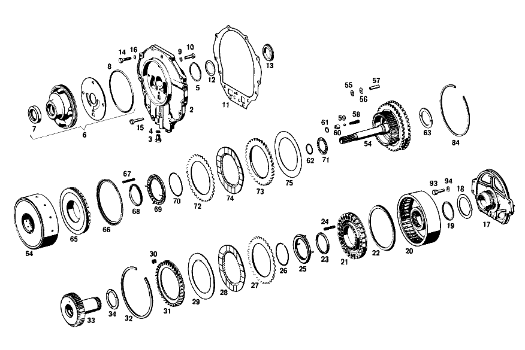

| № | Артикул | Название | Кол. | Примечание | Ограничение |
|---|---|---|---|---|---|
| 1 | A 113 270 09 01 | Коробка передач | 1 | [001] 016 UP TO CHASSIS 001858 EXCEPT FOR 001473,001548,001702,001722,001786,001793,001797,001801,001804,001853-001857 | |
| 2 | A 112 270 07 05 | - КРЫШКА | 1 | [006] 015 FROM TRANSMISSION 005208 | |
| 3 | A 112 997 05 30 | - ЗАГЛУШКА РЕЗЬБОВАЯ | 1 | [007] 015 FROM TRANSMISSION 005208-010717 | |
| 4 | N 007603 010100 | - Уплотнительное кольцо | 1 | 10X13.5 AL [007] 015 FROM TRANSMISSION 005208-010717 | |
| 5 | A 100 272 01 55 | - Уплотнительное кольцо | 2 | ||
| 6 | A 112 270 14 90 | - КОРПУС | 1 | ||
| 7 | A 008 997 91 46 | - Уплотнительное кольцо | 1 | ||
| 8 | A 004 997 05 48 | - Уплотнительное кольцо | 1 | ||
| 8 | A 004 997 05 48 | - Уплотнительное кольцо | 1 | ||
| 9 | N 000137 008100 | - Пружинная шайба | 4 | ||
| 10 | N 006912 008000 | - Винт | 1 | ||
| 11 | A 112 271 04 80 | - ПРОКЛАДКА УПЛОТНИТЕЛЬНАЯ | - | ||
| 11 | A 112 271 13 80 | - уплотнение | 1 | ||
| 12 | A 112 271 00 52 | - РАСПОРНАЯ ШАЙБА | NB | 0.1 MM | |
| 13 | A 112 271 00 62 | - Прижимная шайба | 1 | ||
| 14 | N 000933 007019 | - Винт | 10 | ||
| 15 | N 000933 007020 | - Винт | 3 | ||
| 16 | N 000137 007200 | - Пружинная шайба | 13 | ||
| 17 | A 112 270 03 20 | - ФЛАНЕЦ | 1 | ||
| 18 | A 112 272 07 62 | - Диск | 2 | ||
| 19 | A 100 272 01 55 | - Уплотнительное кольцо | 4 | ||
| 20 | A 112 270 34 20 | - ФЛАНЕЦ | 1 | [006] 015 FROM TRANSMISSION 005208 | |
| 21 | A 112 272 23 31 | - ПОРШЕНЬ | 1 | [010] 015 FROM TRANSMISSION 000041 | |
| 22 | A 115 272 12 92 | - МАНЖЕТА | 1 | [010] 015 FROM TRANSMISSION 000041 | |
| 23 | A 115 272 14 92 | - Уплотнительное кольцо | 1 | [006] 015 FROM TRANSMISSION 005208 | |
| 24 | A 112 993 50 01 | - пружина | 28 | ||
| 25 | A 112 272 07 64 | - ТАРЕЛКА ПРУЖИНЫ КЛАПАНА | 1 | ||
| 26 | A 112 994 00 35 | - Пруж. стопорное кольцо | 1 | ||
| 27 | A 109 272 15 26 | - Диск | 3 | ||
| 28 | A 112 272 02 25 | - Диск | 2 | ||
| 29 | A 112 272 14 62 | - Диск | 1 | ||
| 30 | A 112 993 48 01 | - ПРУЖИНА | 36 | ||
| 31 | A 112 272 33 62 | - УПОРНАЯ ШАЙБА | 1 | [006] 015 FROM TRANSMISSION 005208 | |
| 32 | A 112 272 01 73 | - Кольцо | 1 | ||
| 33 | A 112 270 29 25 | - Вал | 1 | [006] 015 FROM TRANSMISSION 005208 | |
| 34 | A 112 272 00 62 | - УПОРНАЯ ШАЙБА | 1 | ||
| 35 | A 112 270 37 20 | - ФЛАНЕЦ | 1 | [006] 015 FROM TRANSMISSION 005208 | |
| 36 | A 112 272 26 31 | - ПОРШЕНЬ | 1 | [006] 015 FROM TRANSMISSION 005208 | |
| 37 | A 112 272 11 92 | - Уплотнительное кольцо | 1 | [006] 015 FROM TRANSMISSION 005208 | |
| 38 | A 115 272 14 92 | - Уплотнительное кольцо | 1 | [006] 015 FROM TRANSMISSION 005208 | |
| 39 | A 112 993 31 02 | - Нажимная пружина | 21 | [006] 015 FROM TRANSMISSION 005208 | |
| 40 | A 112 272 06 64 | - ТАРЕЛКА ПРУЖИНЫ КЛАПАНА | 1 | ||
| 41 | A 112 994 00 35 | - Пруж. стопорное кольцо | 1 | ||
| 42 | A 112 272 18 24 | - ОБОЙМА ФРИКЦ. ДИСКОВ | 1 | [006] 015 FROM TRANSMISSION 005208 | |
| 43 | A 112 272 01 73 | - Кольцо | 1 | ||
| 44 | A 112 272 07 26 | - Диск | 1 | [015] 015 FROM TRANSMISSION 007429 | |
| 45 | A 112 272 02 25 | - Диск | 2 | [016] 015 FROM TRANSMISSION 003529 | |
| 46 | A 109 272 15 26 | - Диск | 1 | [015] 015 FROM TRANSMISSION 007429 | |
| 47 | A 112 272 11 26 | - Диск | 1 | [015] 015 FROM TRANSMISSION 007429 | |
| 48 | A 112 272 14 62 | - Диск | 1 | ||
| 49 | A 112 272 00 73 | - Кольцо | 1 | ||
| 50 | A 112 994 00 39 | - КОЛЬЦО ПРОВОЛОЧНОЕ | 1 | [006] 015 FROM TRANSMISSION 005208 | |
| 51 | A 112 272 00 52 | - Компенсационная шайба | 1 | ПО НЕОБХОДИМОСТИ 0.5mm | |
| 52 | N 900055 040301 | - Стопорное кольцо | 1 | [006] 015 FROM TRANSMISSION 005208 | |
| 53 | A 112 270 30 25 | - ПРИВОДНОЙ ВАЛ | 1 | [006] 015 FROM TRANSMISSION 005208 | |
| 54 | A 112 270 16 43 | - ВОДИЛО ПЛАНЕТ. ПЕРЕДАЧИ | 1 | FRONT PLANETARY GEAR TRAIN | |
| 55 | A 112 272 37 62 | - УПОРНАЯ ШАЙБА | 6 | ||
| 56 | A 112 272 35 62 | - УПОРНАЯ ШАЙБА | 6 | ||
| 57 | A 112 272 00 74 | - БОЛТ | 3 | ||
| 58 | A 112 993 00 05 | - ПРУЖИНА | 1 | ||
| 59 | N 005401 307000 | - Шар | 1 | 7 MM | |
| 60 | A 112 272 00 67 | - КОЛЬЦО | 1 | ||
| 61 | N 000472 012000 | - Стопорное кольцо | 1 | ||
| 62 | A 307 272 02 55 | - Уплотнительное кольцо | 1 | ||
| 63 | A 112 272 00 62 | - УПОРНАЯ ШАЙБА | 1 | ||
| 64 | A 112 270 39 20 | - ФЛАНЕЦ | 1 | [006] 015 FROM TRANSMISSION 005208 | |
| 65 | A 112 272 22 31 | - ПОРШЕНЬ | 1 | [010] 015 FROM TRANSMISSION 000041 | |
| 66 | A 115 272 12 92 | - МАНЖЕТА | 1 | [010] 015 FROM TRANSMISSION 000041 | |
| 67 | A 112 993 31 02 | - Нажимная пружина | 28 | [006] 015 FROM TRANSMISSION 005208 | |
| 68 | A 115 272 14 92 | - Уплотнительное кольцо | 1 | [006] 015 FROM TRANSMISSION 005208 | |
| 69 | A 112 272 06 64 | - ТАРЕЛКА ПРУЖИНЫ КЛАПАНА | 1 | ||
| 70 | A 112 994 00 35 | - Пруж. стопорное кольцо | 1 | ||
| 71 | A 000 981 47 10 | - ПОДШИПНИК ИГОЛЬЧАТЫЙ | 1 | ||
| 72 | A 109 272 15 26 | - Диск | 2 | [015] 015 FROM TRANSMISSION 007429 | |
| 73 | A 112 272 11 26 | - Диск | 2 | [015] 015 FROM TRANSMISSION 007429 | |
| 74 | A 112 272 02 25 | - Диск | 3 | [016] 015 FROM TRANSMISSION 003529 | |
| 75 | A 112 272 14 62 | - Диск | 1 | ||
| 76 | A 112 270 17 43 | - ВОДИЛО ПЛАНЕТ. ПЕРЕДАЧИ | 1 | [006] 015 FROM TRANSMISSION 005208 | |
| 77 | A 112 272 36 62 | - УПОРНАЯ ШАЙБА | 6 | ||
| 78 | A 112 272 38 62 | - УПОРНАЯ ШАЙБА | 6 | ||
| 79 | A 112 272 01 74 | - БОЛТ | 3 | ||
| 80 | A 115 272 02 73 | - Кольцо | 1 | [006] 015 FROM TRANSMISSION 005208 | |
| 81 | A 112 994 07 35 | - Пруж. стопорное кольцо | 1 | [006] 015 FROM TRANSMISSION 005208 | |
| 82 | A 000 981 99 10 | - ПОДШИПНИК ИГОЛЬЧАТЫЙ | 1 | [006] 015 FROM TRANSMISSION 005208 | |
| 83 | A 000 981 48 10 | - ПОДШИПНИК ИГОЛЬЧАТЫЙ | 1 | ||
| 84 | A 112 272 01 73 | - Кольцо | 1 | ||
| 85 | A 100 981 00 10 | - Игольчатый подшипник | 1 | [402] БОЛЬШЕ НЕ ПОСТАВЛЯЕТСЯ [006] 015 FROM TRANSMISSION 005208 | |
| 86 | A 000 272 10 62 | - УПОРНАЯ ШАЙБА | 1 | [006] 015 FROM TRANSMISSION 005208 | |
| 87 | A 100 272 01 52 | - РАСПОРНАЯ ШАЙБА | 1 | ПО НЕОБХОДИМОСТИ 0.1 MM [006] 015 FROM TRANSMISSION 005208 | |
| 88 | A 112 272 19 62 | - УПОРНАЯ ШАЙБА | 1 | ||
| 89 | N 000625 506207 | - Шарикоподшипник | 1 | ||
| 90 | A 112 272 09 52 | - Компенсационная шайба | 1 | ||
| 91 | A 112 272 06 52 | - Компенсационная шайба | NB | 0.1 MM | |
| 92 | N 005417 072000 | - Пруж. стопорное кольцо | 1 | ||
| 93 | N 000933 008057 | - Винт | - | ||
| 93 | N 304017 008034 | - Винт с 6-гранной головкой | 4 | M8X25 | |
| 94 | N 000137 008200 | - Пружинная шайба | 4 | ||
| 95 | A 112 270 36 11 | - КОРПУС КП | 1 | [018] DELIVER EN COMPLEMENT:1 BREATHER 112 270 01 82 AND 1 SEAL RING 007603 014100 | |
| 96 | N 006503 010100 | - Уплотнительное кольцо | 1 | ||
| 97 | A 001 997 23 46 | - Уплотнительное кольцо | 2 | ||
| 98 | A 112 990 02 40 | - ШАЙБА | 2 | ||
| 99 | A 112 270 13 89 | - Обратный клапан | 2 | ||
| 100 | A 112 277 07 47 | - Трубопровод | 2 | ||
| 101 | A 112 270 05 56 | - РЫЧАГ | 1 | ||
| 102 | A 112 270 03 57 | - ПАЗ ВКЛЮЧЕНИЯ | 1 | ||
| 103 | N 000125 006421 | - Шайба | 1 | ||
| 104 | N 000093 006400 | - Шайба | 1 | ||
| 105 | N 000934 006007 | - Гайка | 1 | ||
| 106 | A 112 270 00 64 | - ВИЛКА ПЕРЕКЛЮЧЕНИЯ | 1 | ||
| 107 | A 112 270 00 65 | - ТЯГИ | 1 | ||
| 108 | N 071805 010200 | - Шаровой подпятник | 1 | ||
| 109 | N 000439 006100 | - Гайка | 1 | ||
| 110 | N 071805 010400 | - Защитный кронштейн | 2 | ||
| 111 | A 112 277 06 24 | - РЫЧАГ | 1 | ||
| 112 | A 112 277 10 74 | - БОЛТ | 1 | [025] 015 FROM TRANSMISSION 004996 | |
| 113 | A 112 270 01 32 | - ПОРШЕНЬ | 1 | ||
| 114 | A 112 277 01 92 | - Манжета | 1 | ||
| 115 | A 112 993 72 01 | - ПРУЖИНА | 1 | ||
| 116 | A 112 993 71 01 | - ПРУЖИНА | 1 | ||
| 117 | A 112 277 08 53 | - РАСПОРН. ТРУБКА | 1 | ||
| 118 | A 000 994 27 41 | - Стопорное кольцо | 1 | ||
| 119 | A 112 270 20 62 | - ЛЕНТА ТОРМОЗНАЯ | - | ||
| 119 | A 112 270 25 62 | - ЛЕНТА ТОРМОЗНАЯ | 2 | FORWARD SPEED | |
| 120 | A 112 270 23 62 | - ЛЕНТА ТОРМОЗНАЯ | - | ||
| 120 | A 112 270 26 62 | - ЛЕНТА ТОРМОЗНАЯ | 1 | ПЕРЕДАЧА ЗАДНЕГО ХОДА [025] 015 FROM TRANSMISSION 004996 | |
| 121 | A 112 277 04 75 | - ШТИФТ | 2 | 35 MM AS REQUIRED | |
| 122 | A 112 997 01 30 | - ЗАГЛУШКА РЕЗЬБОВАЯ | 1 | ||
| 123 | N 007603 016401 | - Уплотнительное кольцо | 1 | ||
| 124 | A 112 277 01 71 | - болт | 1 | [402] БОЛЬШЕ НЕ ПОСТАВЛЯЕТСЯ | |
| 125 | A 112 277 31 75 | - ШТИФТ | 2 | [025] 015 FROM TRANSMISSION 004996 | |
| 126 | A 112 277 00 03 | - КРЫШКА | 1 | ||
| 127 | A 112 277 00 80 | - ПРОКЛАДКА УПЛОТНИТЕЛЬНАЯ | - | ||
| 127 | A 112 277 17 80 | - уплотнение | 1 | ||
| 128 | N 000933 070019 | - БОЛТ | 6 | ||
| 129 | N 000137 007200 | - Пружинная шайба | 6 | ||
| 130 | A 112 997 00 30 | - Резьбовая пробка | 1 | ||
| 131 | A 000 997 87 20 | - Уплотнительное кольцо | 1 | ||
| 132 | A 112 270 01 82 | - Воздушный клапан | 1 | [027] 015 FROM TRANSMISSION 008637 | |
| 133 | N 007603 014100 | - Уплотнительное кольцо | 1 | 14X18\-AL [029] TO 112 270 01 82 | |
| 134 | A 112 270 09 32 | - ПОРШЕНЬ | 2 | ||
| 135 | A 112 277 00 55 | - Уплотнительное кольцо | 2 | ||
| 136 | A 112 270 08 14 | - КРЫШКА ПОДШИПНИКА | 1 | [031] 015 FROM TRANSMISSION 000030 | |
| 137 | A 000 997 60 41 | - Уплотнительное кольцо | 1 | [031] 015 FROM TRANSMISSION 000030 | |
| 138 | A 111 270 00 71 | Мембрана | 1 | ||
| 139 | A 112 270 01 88 | - Изоляционная пластина | 1 | ||
| 140 | A 112 270 00 79 | - Мембрана | 1 | [033] 015 FROM TRANSMISSION 002756 | |
| 141 | A 112 277 24 75 | - Нажимной штифт | 1 | 80 MM AS REQUIRED [033] 015 FROM TRANSMISSION 002756 | |
| 142 | A 112 277 05 14 | - ПЛАСТИНА ПРОМЕЖУТОЧНАЯ | 1 | ||
| 143 | A 000 997 68 45 | - Уплотнительное кольцо | 1 | ||
| 144 | A 112 277 07 53 | - РАСПОРН. ТРУБКА | 1 | ||
| 145 | A 112 277 09 77 | - НАПРАВЛ. ЭЛЕМЕНТ | 2 | [033] 015 FROM TRANSMISSION 002756 | |
| 146 | A 112 993 24 02 | - Нажимная пружина | 1 | [033] 015 FROM TRANSMISSION 002756 | |
| 147 | N 006799 003202 | - Стопорная шайба | 1 | ||
| 148 | A 112 993 40 02 | - Нажимная пружина | 1 | [006] 015 FROM TRANSMISSION 005208 | |
| 149 | A 111 277 00 03 | - КРЫШКА | 1 | ||
| 150 | A 112 277 02 71 | - БОЛТ | 1 | ||
| 151 | A 112 277 10 46 | - ТАРЕЛКА ПРУЖИНЫ КЛАПАНА | 1 | ||
| 152 | N 007603 006100 | - Уплотнительное кольцо | 1 | ||
| 153 | N 000934 006007 | - Гайка | 1 | ||
| 154 | N 007603 010100 | - Уплотнительное кольцо | 1 | 10X13.5 AL | |
| 155 | N 915013 004002 | - Штуцер | 1 | ||
| 156 | N 000933 005031 | - Винт | 2 | ||
| 157 | N 000137 005100 | - Пружинная шайба | 2 | ||
| 158 | N 000933 005103 | - Винт | 1 | ||
| 159 | N 000137 005100 | - Пружинная шайба | 1 | ||
| 160 | A 112 997 00 30 | - Резьбовая пробка | 3 | ||
| 161 | A 000 997 87 20 | - Уплотнительное кольцо | 3 | ||
| 162 | A 112 277 13 80 | - ПРОКЛАДКА УПЛОТНИТЕЛЬНАЯ | - | ||
| 162 | A 112 277 15 80 | - ПРОКЛАДКА УПЛОТНИТЕЛЬНАЯ | - | ||
| 162 | A 110 277 01 80 | - уплотнение | 1 | ||
| 163 | A 112 993 14 01 | - ПРУЖИНА | 2 | ||
| 164 | A 112 277 03 80 | - ПРОКЛАДКА УПЛОТНИТЕЛЬНАЯ | - | ||
| 164 | A 112 277 19 80 | - уплотнение | 1 | ||
| 165 | N 000933 007017 | - Винт | 3 | ||
| 166 | N 000137 007200 | - Пружинная шайба | 9 | ||
| 167 | N 000936 014005 | - ГАЙКА | 1 | ||
| 168 | A 112 997 00 30 | - Резьбовая пробка | 3 | для CHECK BORE | |
| 169 | A 000 997 87 20 | - Уплотнительное кольцо | 3 | для CHECK BORE | |
| 170 | A 112 270 11 16 | - КРЫШКА КОРПУСА | 1 | LESS GOVERNOR, PUMP, AND DRIVE GEAR | |
| 171 | A 112 277 27 31 | - ПОРШЕНЬ | 1 | ||
| 172 | A 112 993 76 01 | - ПРУЖИНА | 1 | ||
| 173 | A 112 993 77 01 | - ПРУЖИНА | 1 | ||
| 174 | A 112 277 08 52 | - ШАЙБА РАСПОРН. | NB | MAXIMUM,4 PIECES | |
| 175 | A 112 277 55 31 | - ПОРШЕНЬ | 1 | ||
| 176 | A 112 993 68 01 | - ПРУЖИНА | 1 | ||
| 177 | A 112 277 07 52 | - ШАЙБА РАСПОРН. | NB | MAXIMUM,2 PIECES | |
| 178 | A 112 277 01 80 | - ПРОКЛАДКА УПЛОТНИТЕЛЬНАЯ | - | ||
| 178 | A 112 277 16 80 | - уплотнение | 1 | ||
| 179 | A 112 277 00 83 | - ЩИТОК ЗАКРЫВ. | 1 | ||
| 180 | N 000084 005105 | - Винт | 2 | ||
| 181 | N 000137 005100 | - Пружинная шайба | 2 | ||
| 182 | A 109 270 01 93 | - ПРИВОДНОЙ ВАЛ | 1 | [006] 015 FROM TRANSMISSION 005208 | |
| 183 | A 186 277 00 55 | - Уплотнительное кольцо | 3 | ||
| 184 | A 112 991 02 01 | - Палец | 1 | 5.4 MM REPAIR SIZE | |
| 185 | A 112 270 09 50 | - ВТУЛКА | 1 | ||
| 186 | A 112 993 01 02 | - Нажимная пружина | 6 | ||
| 187 | A 112 270 00 97 | - МАСЛЯНЫЙ НАСОС | 1 | ||
| 188 | A 112 270 01 87 | - КОМПЛЕКТ УПЛОТНЕНИЙ | 1 | ||
| 189 | A 112 277 04 53 | - втулка | 1 | ПОВОДОК НА ПРИВОДНОМ ВАЛУ | |
| 190 | N 000931 006046 | - БОЛТ | 4 | ||
| 191 | N 000137 006204 | - Пружинная шайба | 4 | ||
| 192 | A 112 277 09 80 | - ПРОКЛАДКА УПЛОТНИТЕЛЬНАЯ | - | ||
| 192 | A 112 277 18 80 | - уплотнение | 1 | ||
| 193 | A 113 270 00 69 | ДАТЧИК | 1 | ||
| 194 | A 000 997 78 45 | - Уплотнительное кольцо | 1 | ||
| 195 | N 000912 005004 | - Цилиндрич. винт | 4 | ||
| 196 | N 000137 005100 | - Пружинная шайба | 4 | ||
| 197 | A 112 277 04 80 | - ПРОКЛАДКА УПЛОТНИТЕЛЬНАЯ | - | ||
| 197 | A 112 277 14 80 | - уплотнение | 1 | ||
| 198 | N 000933 006123 | - Винт | 4 | ||
| 199 | N 000931 006087 | - Винт | - | ||
| 199 | N 304014 006004 | - Винт с 6-гранной головкой | 5 | ||
| 200 | N 000137 006204 | - Пружинная шайба | 9 | ||
| 201 | A 112 270 12 11 | - КОРПУС КП | 1 | ||
| 202 | A 000 997 87 20 | Уплотнительное кольцо | 1 | [036] 015 FROM TRANSMISSION 009765 | |
| 203 | A 112 997 00 30 | Резьбовая пробка | 1 | [036] 015 FROM TRANSMISSION 009765 | |
| 204 | A 112 278 02 21 | - СТОПОРНАЯ СКОБА | 1 | ||
| 205 | A 112 993 90 01 | - ПРУЖИНА | 1 | ||
| 206 | A 112 278 00 69 | - БОЛТ | 1 | ||
| 207 | N 007603 016401 | - Уплотнительное кольцо | 1 | ||
| 208 | A 112 993 99 01 | - ПРУЖИНА | 1 | ||
| 209 | A 112 278 03 74 | - БОЛТ | 1 | ||
| 210 | N 000625 900201 | - Шарикоподшипник | 1 | [006] 015 FROM TRANSMISSION 005208 | |
| 211 | A 003 997 47 46 | - Уплотнительное кольцо | 1 | [006] 015 FROM TRANSMISSION 005208 | |
| 212 | A 100 272 00 17 | - ШЕСТЕРНЯ | 1 | ВТОРИЧНЫЙ ВАЛ [006] 015 FROM TRANSMISSION 005208 | |
| 213 | A 100 272 00 74 | - БОЛТ | 1 | [006] 015 FROM TRANSMISSION 005208 | |
| 214 | A 112 271 06 80 | - ПРОКЛАДКА УПЛОТНИТЕЛЬНАЯ | - | ||
| 214 | A 112 271 14 80 | - уплотнение | 1 | ||
| 215 | N 000933 007022 | - Винт | 5 | ||
| 216 | N 000933 007021 | - Винт | 7 | ||
| 217 | N 000137 007200 | - Пружинная шайба | 12 | ||
| 218 | A 111 262 00 45 | - Фланец | 1 | [006] 015 FROM TRANSMISSION 005208 | |
| 219 | A 186 262 02 26 | - Шлицевая гайка | 1 | ||
| 220 | A 186 262 01 73 | - предохранитель | 1 | ||
| 221 | A 112 270 05 27 | - ПРИВОД СПИДОМЕТРА | 1 | ||
| 222 | A 112 274 00 32 | - ПРИВОДНОЙ ВАЛ | 1 | ||
| 223 | A 112 270 06 27 | - Привод спидометра | 1 | ||
| 224 | A 112 270 01 13 | - Корпус подшипника | 1 | ||
| 225 | A 000 997 68 45 | - Уплотнительное кольцо | 1 | ||
| 226 | A 112 270 00 08 | - Крышка | 1 | ||
| 227 | A 112 274 01 80 | - уплотнение | 1 | ||
| 228 | N 000933 006102 | - Винт | - | ||
| 228 | N 304017 006016 | - Винт с 6-гранной головкой | 2 | M6X16 | |
| 229 | N 000137 006204 | - Пружинная шайба | 2 | ||
| 230 | A 112 270 23 07 | - Корпус перекл. золотника | 1 | [006] 015 FROM TRANSMISSION 005208 | |
| 231 | A 112 270 22 07 | - КОРПУС ЗОЛОТНИКА | 1 | [006] 015 FROM TRANSMISSION 005208 | |
| 232 | A 112 277 53 29 | - ПОЛЗУНОК | - | [402] БОЛЬШЕ НЕ ПОСТАВЛЯЕТСЯ [038] TO 112 270 14 07, 112 270 22 07 | |
| 233 | A 112 993 27 01 | - ПРУЖИНА | - | [402] БОЛЬШЕ НЕ ПОСТАВЛЯЕТСЯ [038] TO 112 270 14 07, 112 270 22 07 | |
| 234 | A 112 277 35 50 | - ВТУЛКА | 1 | [038] TO 112 270 14 07, 112 270 22 07 | |
| 235 | A 112 277 45 31 | - ПОРШЕНЬ | - | [402] БОЛЬШЕ НЕ ПОСТАВЛЯЕТСЯ [038] TO 112 270 14 07, 112 270 22 07 | |
| 236 | A 112 993 35 02 | - ПРУЖИНА | - | [402] БОЛЬШЕ НЕ ПОСТАВЛЯЕТСЯ [038] TO 112 270 14 07, 112 270 22 07 | |
| 237 | A 112 277 46 31 | - ПОРШЕНЬ | - | [402] БОЛЬШЕ НЕ ПОСТАВЛЯЕТСЯ [038] TO 112 270 14 07, 112 270 22 07 | |
| 238 | A 112 993 37 02 | - ПРУЖИНА | - | [402] БОЛЬШЕ НЕ ПОСТАВЛЯЕТСЯ [038] TO 112 270 14 07, 112 270 22 07 | |
| 239 | A 112 277 11 74 | - БОЛТ | 4 | [038] TO 112 270 14 07, 112 270 22 07 | |
| 240 | A 112 277 00 73 | - ПРЕДОХРАНИТЕЛЬ | 4 | [038] TO 112 270 14 07, 112 270 22 07 | |
| 241 | A 112 277 37 50 | - ВТУЛКА | 1 | [038] TO 112 270 14 07, 112 270 22 07 | |
| 242 | A 112 993 38 02 | - ПРУЖИНА | - | [402] БОЛЬШЕ НЕ ПОСТАВЛЯЕТСЯ [038] TO 112 270 14 07, 112 270 22 07 | |
| 243 | A 112 277 47 31 | - ПОРШЕНЬ | - | [402] БОЛЬШЕ НЕ ПОСТАВЛЯЕТСЯ [038] TO 112 270 14 07, 112 270 22 07 | |
| 244 | A 112 277 50 31 | - ПОРШЕНЬ | - | [417] БОЛЬШЕ НЕ ПОСТАВЛЯЕТСЯ, ЗАКАЗЫВАТЬ КОМПЛЕКТ ПОСТАВКИ [402] БОЛЬШЕ НЕ ПОСТАВЛЯЕТСЯ [038] TO 112 270 14 07, 112 270 22 07 | |
| 245 | A 112 993 44 02 | - ПРУЖИНА | - | [402] БОЛЬШЕ НЕ ПОСТАВЛЯЕТСЯ [038] TO 112 270 14 07, 112 270 22 07 | |
| 246 | A 112 277 05 83 | - ЩИТОК ЗАКРЫВ. | 1 | ||
| 247 | A 115 277 29 36 | - ДЕТАЛЬ КЛАПАНА | 1 | [402] БОЛЬШЕ НЕ ПОСТАВЛЯЕТСЯ [038] TO 112 270 14 07, 112 270 22 07 | |
| 248 | A 112 993 48 02 | - ПРУЖИНА | - | [402] БОЛЬШЕ НЕ ПОСТАВЛЯЕТСЯ [038] TO 112 270 14 07, 112 270 22 07 | |
| 249 | A 112 270 14 89 | - КЛАПАН | 1 | [039] 015 FROM TRANSMISSION 010581 | |
| 250 | A 005 997 41 45 | - Уплотнительное кольцо | 1 | [039] 015 FROM TRANSMISSION 010581 | |
| 251 | A 112 277 13 14 | - Металлическая прокладка | 1 | [006] 015 FROM TRANSMISSION 005208 | |
| 252 | A 112 277 12 80 | - ПРОКЛАДКА УПЛОТНИТЕЛЬНАЯ | - | ||
| 252 | A 112 277 23 80 | - уплотнение | 1 | [006] 015 FROM TRANSMISSION 005208 | |
| 253 | A 112 270 17 07 | - КОРПУС ЗОЛОТНИКА | - | [402] БОЛЬШЕ НЕ ПОСТАВЛЯЕТСЯ | |
| 254 | A 112 277 31 50 | - ВТУЛКА | 1 | [006] 015 FROM TRANSMISSION 005208 | |
| 255 | A 112 993 09 02 | - ПРУЖИНА | - | [402] БОЛЬШЕ НЕ ПОСТАВЛЯЕТСЯ | |
| 256 | A 112 277 04 36 | - ДЕТАЛЬ КЛАПАНА | 2 | ||
| 258 | A 112 277 56 29 | - ПОЛЗУНОК | - | [402] БОЛЬШЕ НЕ ПОСТАВЛЯЕТСЯ | |
| 259 | A 112 277 40 31 | - ПОРШЕНЬ | - | [402] БОЛЬШЕ НЕ ПОСТАВЛЯЕТСЯ | |
| 260 | A 112 270 08 70 | - ЗОЛОТНИК РЕГУЛИРУЮЩИЙ | - | [402] БОЛЬШЕ НЕ ПОСТАВЛЯЕТСЯ | |
| 261 | A 112 270 06 77 | - ШТИФТ НАЖИМНОЙ | - | [402] БОЛЬШЕ НЕ ПОСТАВЛЯЕТСЯ | |
| 262 | A 112 993 42 02 | - ПРУЖИНА | - | [402] БОЛЬШЕ НЕ ПОСТАВЛЯЕТСЯ | |
| 263 | A 112 277 49 31 | - ПОРШЕНЬ | - | [402] БОЛЬШЕ НЕ ПОСТАВЛЯЕТСЯ | |
| 264 | A 112 277 47 29 | - ПОЛЗУНОК | - | [402] БОЛЬШЕ НЕ ПОСТАВЛЯЕТСЯ | |
| 265 | A 112 277 29 50 | - ВТУЛКА | 1 | ||
| 266 | A 112 993 39 02 | - ПРУЖИНА | - | [402] БОЛЬШЕ НЕ ПОСТАВЛЯЕТСЯ | |
| 267 | A 112 277 54 29 | - ПОЛЗУНОК | - | [402] БОЛЬШЕ НЕ ПОСТАВЛЯЕТСЯ | |
| 268 | A 112 993 19 01 | - ПРУЖИНА | - | [402] БОЛЬШЕ НЕ ПОСТАВЛЯЕТСЯ | |
| 269 | A 112 277 17 83 | - ЩИТОК ЗАКРЫВ. | 2 | ||
| 270 | A 112 277 11 14 | - ПЛАСТИНА ПРОМЕЖУТОЧНАЯ | 1 | ||
| 271 | A 112 270 21 07 | - КОРПУС ЗОЛОТНИКА | - | [402] БОЛЬШЕ НЕ ПОСТАВЛЯЕТСЯ | |
| 272 | A 112 993 15 02 | - ПРУЖИНА | - | [402] БОЛЬШЕ НЕ ПОСТАВЛЯЕТСЯ | |
| 273 | A 112 277 52 31 | - ПОРШЕНЬ | - | [402] БОЛЬШЕ НЕ ПОСТАВЛЯЕТСЯ | |
| 274 | A 112 993 44 02 | - ПРУЖИНА | - | [402] БОЛЬШЕ НЕ ПОСТАВЛЯЕТСЯ | |
| 275 | A 112 277 29 29 | - ПОЛЗУНОК | - | [402] БОЛЬШЕ НЕ ПОСТАВЛЯЕТСЯ | |
| 276 | A 112 277 55 29 | - ПОЛЗУНОК | - | [402] БОЛЬШЕ НЕ ПОСТАВЛЯЕТСЯ | |
| 277 | A 112 277 36 50 | - ВТУЛКА | 1 | [006] 015 FROM TRANSMISSION 005208 | |
| 278 | A 112 993 19 01 | - ПРУЖИНА | - | [402] БОЛЬШЕ НЕ ПОСТАВЛЯЕТСЯ | |
| 279 | A 112 277 15 30 | - ПОЛЗУНОК | - | [402] БОЛЬШЕ НЕ ПОСТАВЛЯЕТСЯ | |
| 280 | A 112 993 50 02 | - ПРУЖИНА | - | [402] БОЛЬШЕ НЕ ПОСТАВЛЯЕТСЯ | |
| 281 | A 112 277 03 92 | - Уплотнительное кольцо | 2 | ||
| 283 | A 112 277 08 83 | - ЩИТОК ЗАКРЫВ. | 2 | ||
| 284 | A 112 277 09 83 | - ЩИТОК ЗАКРЫВ. | 1 | ||
| 285 | A 112 277 04 83 | - ЩИТОК ЗАКРЫВ. | 1 | ||
| 286 | N 000931 006055 | - Винт | 8 | ||
| 287 | N 000931 006061 | - Винт | 1 | ||
| 288 | N 000137 006100 | - Пружинная шайба | - | ||
| 288 | N 000137 006204 | - Пружинная шайба | 9 | ||
| 290 | A 094 990 16 00 | - Винт | 1 | [042] 015 FROM TRANSMISSION 008720-008952, FROM TRANSMISSION 010581 | |
| 291 | N 000137 006100 | - Пружинная шайба | - | ||
| 291 | N 000137 006204 | - Пружинная шайба | 1 | ||
| 292 | A 112 277 06 47 | - ТРУБКА | 2 | ||
| 293 | A 000 997 63 45 | - Уплотнительное кольцо | 4 | ||
| 294 | N 000933 007019 | - Винт | 9 | ||
| 295 | N 000137 007201 | - Пружинная шайба | 9 | ||
| 296 | A 112 270 04 12 | - Поддон масляный | 1 | ||
| 297 | N 007604 014106 | - Резьбовая пробка | - | ||
| 297 | A 094 990 16 08 | - Резьбовая пробка | 1 | ||
| 298 | A 112 997 03 72 | - Штуцер | 1 | ||
| 300 | N 007603 014100 | - Уплотнительное кольцо | 2 | 14X18\-AL | |
| 301 | A 112 271 09 80 | - Уплотнительная прокладка | 1 | ||
| 302 | N 000933 007027 | - Винт | 16 | ||
| 303 | N 000137 007200 | - Пружинная шайба | 16 | ||
| 304 | A 000 304 02 90 | - ПЕРЕКЛ.МАГНИТ | 1 | ||
| 305 | A 112 300 06 36 | - ОПОРА ПОДШИПНИКА | 1 | [031] 015 FROM TRANSMISSION 000030 | |
| 306 | A 112 304 00 60 | - Уплотнительное кольцо | 1 | ||
| 307 | A 094 990 26 05 | - Винт | 2 | ||
| 308 | N 000137 005100 | - Пружинная шайба | 2 | ||
| 309 | A 112 304 00 40 | - ДЕРЖАТЕЛЬ | 1 | ||
| 310 | N 000084 005402 | - Винт | 2 | ||
| 311 | N 000137 005100 | - Пружинная шайба | 2 | ||
| 312 | N 000933 007023 | - Винт | 2 | ||
| 313 | N 000137 007200 | - Пружинная шайба | 2 | ||
| 314 | A 112 300 10 15 | - Тяга | 1 | [031] 015 FROM TRANSMISSION 000030 | |
| 315 | N 000934 005008 | - Гайка | 3 | M5 [031] 015 FROM TRANSMISSION 000030 | |
| 316 | N 000934 005010 | - Гайка | 1 | ЛЕВАЯ РЕЗЬБА [031] 015 FROM TRANSMISSION 000030 | |
| 317 | N 900333 005001 | - Стяжная гайка | 1 | [031] 015 FROM TRANSMISSION 000030 | |
| 318 | N 071805 008204 | - Шаровой подпятник | 2 | [031] 015 FROM TRANSMISSION 000030 | |
| 319 | A 000 997 60 41 | - Уплотнительное кольцо | 1 | [031] 015 FROM TRANSMISSION 000030 | |
| 320 | N 071805 008400 | - Защитный кронштейн | 2 | [031] 015 FROM TRANSMISSION 000030 | |
| 321 | N 000912 006042 | Винт | 1 | FLEXIBLE SHAFT TO BEARING BODY | |
| 322 | N 000137 006204 | Пружинная шайба | 1 | FLEXIBLE SHAFT TO BEARING BODY | |
| 324 | A 116 270 00 83 | Маслоизмерительный щуп | 1 | [044] 015 FROM CHASSIS 000706 | |
| 326 | A 000 546 65 41 | Кабельный соединитель | 1 | ||
| 327 | A 127 257 04 90 | КОЖУХ | 1 | ||
| 328 | A 111 270 13 47 | ПРОВОД | 1 | ||
| 329 | A 112 997 03 81 | втулка | 2 | ||
| 331 | N 007623 004302 | ПОЛЫЙ БОЛТ | 1 | ||
| 332 | N 007603 010100 | Уплотнительное кольцо | 2 | 10X13.5 AL | |
| 333 | A 001 542 13 17 | ДАТЧИК | 2 | ||
| 334 | A 112 540 01 73 | Опорный кронштейн | 1 | ||
| 335 | A 112 540 02 73 | ДЕРЖАТЕЛЬ | 1 | ||
| 336 | N 007603 012100 | Уплотнительное кольцо | 2 | 12X16\-AL | |
| 337 | A 112 990 02 63 | Полый болт | 2 | ||
| 338 | A 000 997 87 20 | Уплотнительное кольцо | 4 | ||
| 339 | N 000931 006084 | Винт | - | ||
| 339 | N 304017 006027 | Винт с 6-гранной головкой | 2 | M6X45 | |
| 340 | N 000137 006204 | Пружинная шайба | 2 | ||
| 341 | A 111 540 04 38 | Электрический провод | 1 | ||
| 342 | A 111 995 01 01 | ХОМУТ | 1 | ||
| 343 | A 111 270 08 96 | Маслопровод | 1 | ||
| 344 | A 114 270 03 96 | ПРОВОД | - | ||
| 344 | A 114 270 09 96 | ПРОВОД | 1 | ||
| 345 | A 001 997 18 52 | ШЛАНГ | 2 | ||
| 346 | A 109 270 03 96 | Маслопровод | 1 | ||
| 347 | A 111 270 07 96 | Маслопровод | 1 | ||
| 348 | N 007623 006302 | ПОЛЫЙ БОЛТ | 2 | ||
| 349 | N 007603 012100 | Уплотнительное кольцо | 4 | 12X16\-AL | |
| 350 | A 120 995 00 05 | хомут | 2 | [402] БОЛЬШЕ НЕ ПОСТАВЛЯЕТСЯ | |
| 351 | N 000933 006102 | Винт | - | ||
| 351 | N 304017 006016 | Винт с 6-гранной головкой | 2 | M6X16 | |
| 352 | N 000127 006200 | Пружинное кольцо | 2 | ||
| 353 | A 112 997 02 81 | втулка | 2 | ||
| 354 | A 120 995 00 05 | хомут | 4 | [402] БОЛЬШЕ НЕ ПОСТАВЛЯЕТСЯ | |
| 355 | A 111 995 12 32 | ХОМУТ | 2 | ||
| 362 | A 111 492 04 30 | ЗАЩИТНАЯ ПАНЕЛЬ | 1 | [046] 015 FROM CHASSIS 000666 | |
| 363 | A 094 995 15 00 | хомут | - | ||
| 363 | A 110 995 04 01 | хомут | 1 | ||
| 366 | A 115 270 08 90 | - Корпус | 1 | ||
| 367 | A 112 277 43 50 | - втулка | 1 | ||
| 368 | A 008 997 91 46 | - Уплотнительное кольцо | 1 | ||
| 369 | A 115 277 03 14 | - ПЛАСТИНА ПРОМЕЖУТОЧНАЯ | 1 | ||
| 369B | A 004 997 05 48 | - Уплотнительное кольцо | 1 | ||
| 369B | A 004 997 05 48 | - Уплотнительное кольцо | 1 | ||
| 370 | N 000931 008046 | - Винт | - | ||
| 370 | N 304017 008018 | - Винт с 6-гранной головкой | 4 | M8X35 | |
| 371 | N 000137 008204 | - Пружинная шайба | 4 | ||
| 372 | N 000625 016008 | - Шарикоподшипник | 1 | [402] БОЛЬШЕ НЕ ПОСТАВЛЯЕТСЯ | |
| 373 | A 115 270 21 50 | - втулка | 1 | ||
| 373B | A 115 272 06 55 | - УПЛОТНИТ. КОЛЬЦО | - | ||
| 373B | A 316 272 04 55 | - Уплотнительное кольцо | 4 | [402] БОЛЬШЕ НЕ ПОСТАВЛЯЕТСЯ | |
| 374 | A 115 272 07 92 | - Резиновый наконечник | 1 | ||
| 376 | A 094 990 45 07 | - Шар | 2 | ||
| 377E | A 115 272 14 92 | - Уплотнительное кольцо | 1 | ||
| 380 | A 115 994 08 35 | - Пруж. стопорное кольцо | 1 | ||
| 381 | A 115 272 14 07 | - СОЛНЕЧНАЯ ШЕСТЕРНЯ | - | [402] БОЛЬШЕ НЕ ПОСТАВЛЯЕТСЯ [047] NO LONGER AVAILABLE INDIVIDUALLY, BUT ONLY IN RANGE OF DELIVERY OF CENTRAL PLANETARY GEAR TRAIN | |
| 382 | A 000 994 14 40 | - Пруж. стопорное кольцо | 1 | ||
| 383 | A 002 981 27 10 | - ПОДШИПНИК ИГОЛЬЧАТЫЙ | 1 | [402] БОЛЬШЕ НЕ ПОСТАВЛЯЕТСЯ | |
| 384 | A 112 272 02 25 | - Диск | 3 | ||
| 385 | A 109 272 15 26 | - Диск | 1 | ||
| 386 | A 109 272 23 26 | - Диск | 2 | ||
| 387 | A 109 272 19 26 | - Диск | 1 | ||
| 388 | A 115 272 12 73 | - Кольцо | 1 | ||
| 389 | A 112 272 14 62 | - Диск | 1 | 0.6 MM [034] 056 UP TO TRANSMISSION 002327 | |
| 392 | A 115 272 04 06 | - ПЛАНЕТАРНАЯ ШЕСТЕРНЯ | - | [402] БОЛЬШЕ НЕ ПОСТАВЛЯЕТСЯ | |
| 393 | A 000 981 47 87 | - ИГЛА | - | [402] БОЛЬШЕ НЕ ПОСТАВЛЯЕТСЯ | |
| 394 | A 115 272 39 62 | - УПОРНАЯ ШАЙБА | - | [402] БОЛЬШЕ НЕ ПОСТАВЛЯЕТСЯ | |
| 395 | A 115 272 38 62 | - УПОРНАЯ ШАЙБА | - | [402] БОЛЬШЕ НЕ ПОСТАВЛЯЕТСЯ | |
| 396 | A 115 272 10 74 | - БОЛТ | - | [402] БОЛЬШЕ НЕ ПОСТАВЛЯЕТСЯ | |
| 397 | A 004 981 21 10 | - ПОДШИПНИК ИГОЛЬЧАТЫЙ | - | ||
| 397 | A 000 981 14 11 | - Игольчатый подшипник | 1 | ||
| 399 | A 115 272 10 08 | - ЭПИЦИКЛ. ШЕСТЕРНЯ | - | [402] БОЛЬШЕ НЕ ПОСТАВЛЯЕТСЯ [047] NO LONGER AVAILABLE INDIVIDUALLY, BUT ONLY IN RANGE OF DELIVERY OF CENTRAL PLANETARY GEAR TRAIN | |
| 401 | A 115 272 02 73 | - Кольцо | 2 | ||
| 403 | A 115 272 34 62 | - Упорная шайба | 1 | ||
| 404 | A 115 271 17 52 | - Компенсационная шайба | 1 | ПО НЕОБХОДИМОСТИ 0.1 MM | |
| 405 | A 115 271 21 52 | - Компенсационная шайба | 1 | ПО НЕОБХОДИМОСТИ 0.1 MM | |
| 407 | A 115 272 04 06 | - ПЛАНЕТАРНАЯ ШЕСТЕРНЯ | - | [402] БОЛЬШЕ НЕ ПОСТАВЛЯЕТСЯ | |
| 408 | A 000 981 47 87 | - ИГЛА | - | [402] БОЛЬШЕ НЕ ПОСТАВЛЯЕТСЯ | |
| 409 | A 115 272 39 62 | - УПОРНАЯ ШАЙБА | - | [402] БОЛЬШЕ НЕ ПОСТАВЛЯЕТСЯ | |
| 410 | A 115 272 38 62 | - УПОРНАЯ ШАЙБА | - | [402] БОЛЬШЕ НЕ ПОСТАВЛЯЕТСЯ | |
| 411 | A 115 270 10 74 | - БОЛТ | - | [402] БОЛЬШЕ НЕ ПОСТАВЛЯЕТСЯ | |
| 413 | A 115 272 04 73 | - Кольцо | 1 | ||
| 415B | A 109 272 03 92 | - МАНЖЕТА | 1 | ||
| 415E | A 109 272 04 92 | - Уплотнительное кольцо | 1 | ||
| 417 | A 115 270 04 41 | - Тарелка пружины | 1 | ||
| 422 | A 115 272 04 73 | - Кольцо | 1 | ||
| 423 | A 112 272 02 25 | - Диск | 3 | ||
| 425 | A 109 272 23 26 | - Диск | 2 | ||
| 426 | A 115 272 13 73 | - Кольцо | 1 | ||
| 427 | A 002 981 31 10 | - Игольчатый подшипник | 1 | [402] БОЛЬШЕ НЕ ПОСТАВЛЯЕТСЯ | |
| 429 | A 002 981 32 10 | - Сепаратор иг. подшипника | 1 | ||
| 430 | A 115 272 34 62 | - Упорная шайба | 1 | ||
| 431 | A 115 272 02 73 | - Кольцо | 1 | ||
| 433 | N 000471 030000 | - Стопорное кольцо | 1 | [054] 056 UP TO TRANSMISSION 002979 | |
| 435 | A 002 981 30 10 | - Игольчатый подшипник | 1 | ||
| 444 | A 007 981 39 10 | - Игольчатый подшипник | 1 | ||
| 445 | A 004 981 40 10 | - Сепаратор иг. подшипника | 1 | ||
| 446 | A 115 272 37 62 | - Упорная шайба | 1 | ||
| 447 | A 001 981 18 25 | - Рад. шарикоподшипник | 1 | ||
| 448 | A 115 272 49 62 | Диск | 1 | [050] FROM TRANSMISSION 006714 ALSO INSTALLED ON 002222-002521 | |
| 450B | A 307 272 05 55 | - Уплотнительное кольцо | 1 | ||
| 452 | N 007987 006108 | - БОЛТ | 3 | ||
| 453 | A 115 271 13 52 | - Компенсационная шайба | 1 | ПО НЕОБХОДИМОСТИ 0.1 MM | |
| 454 | A 000 304 05 90 | - ПЕРЕКЛ.МАГНИТ | - | [412] БОЛЬШЕ НЕ ПОСТАВЛЯЕТСЯ, ЗАКАЗЫВАТЬ ОТДЕЛЬНЫЕ ДЕТАЛИ [061] NO LONGER AVAILABLE; INSTEAD: 1 COIL 000 304 07 90, 1 KICK-DOWN VALVE 000 304 06 90 | |
| 455 | A 010 997 77 45 | - Уплотнительное кольцо | 1 | ||
| 456 | A 007 997 96 45 | - Уплотнительное кольцо | 1 | ||
| 457 | A 007 997 80 45 | - Уплотнительное кольцо | 1 | ||
| 458 | A 115 304 01 60 | - Уплотнительное кольцо | 1 | ||
| 459 | A 115 270 05 11 | - КОРПУС КП | - | ||
| 459 | A 115 270 32 11 | - КОРПУС КП | - | ||
| 459 | A 115 270 60 11 | - КОРПУС КП | - | ||
| 461 | A 115 997 06 30 | - Резьбовая пробка | 1 | ||
| 462 | N 007603 008105 | - Уплотнительное кольцо | 1 | ||
| 462B | A 115 272 11 92 | - Уплотнительное кольцо | 1 | PISTON B2 | |
| 463 | A 110 997 03 30 | - Резьбовая пробка | 1 | ||
| 464 | N 007603 012104 | - Уплотнительное кольцо | 1 | ||
| 465 | A 006 997 61 46 | - Уплотнительное кольцо | 2 | ||
| 466 | A 115 277 07 05 | - КОРПУС | 1 | ||
| 467 | A 115 993 20 10 | - пружина | 2 | [402] БОЛЬШЕ НЕ ПОСТАВЛЯЕТСЯ | |
| 468 | N 000931 006085 | - Винт | 3 | ||
| 469 | N 000137 006204 | - Пружинная шайба | 3 | ||
| 470 | A 000 545 33 06 | - Переключатель | 1 | STARTER NON\-REPEAT AND BACK\-UP LIGHT | |
| 471 | A 115 997 07 40 | - Уплотнительное кольцо | 1 | ||
| 472 | N 000137 005203 | - Пружинная шайба | 3 | ||
| 473 | N 000084 005174 | - Винт | 3 | ||
| 474 | A 115 278 16 20 | - РЫЧАГ | 1 | СНАРУЖИ | |
| 475 | A 115 278 09 10 | - ВАЛ РЕГУЛЯТОРА | 1 | [402] БОЛЬШЕ НЕ ПОСТАВЛЯЕТСЯ | |
| 476 | A 115 278 09 50 | - втулка | 1 | ||
| 477 | A 115 278 01 53 | - РАСПОРН. ТРУБКА | 1 | [402] БОЛЬШЕ НЕ ПОСТАВЛЯЕТСЯ | |
| 478 | A 004 997 37 45 | - Уплотнительное кольцо | 1 | ||
| 479 | N 000084 004139 | - Винт | 1 | ||
| 480 | N 009021 004202 | - Шайба | - | ||
| 480 | A 094 990 63 08 | - Шайба | 1 | ||
| 481 | N 000137 004202 | - Пружинная шайба | 1 | ||
| 482 | A 115 270 01 57 | - Пластина фиксации сел.АКП | 1 | ||
| 483 | N 006912 006006 | - Винт | 1 | ||
| 484 | N 000137 006204 | - Пружинная шайба | 1 | ||
| 485 | A 109 278 00 20 | - РЫЧАГ | 1 | Рулевое управление: ВправоАвтоматическая коробка переключения передач [402] БОЛЬШЕ НЕ ПОСТАВЛЯЕТСЯ | |
| 490 | A 115 993 00 22 | - пружина | 1 | [402] БОЛЬШЕ НЕ ПОСТАВЛЯЕТСЯ | |
| 491 | A 109 277 01 75 | - Нажимной штифт | 2 | ПО НЕОБХОДИМОСТИ 22 MM | |
| 493 | A 115 277 02 74 | - Палец | 1 | ||
| 494 | A 115 277 04 24 | - РЫЧАГ | 1 | ||
| 495 | A 115 277 53 75 | - Нажимной штифт | 2 | ||
| 496 | A 115 993 02 25 | - пружина | 1 | ||
| 497 | A 115 277 17 71 | - болт | 1 | ||
| 498 | A 115 990 04 51 | - гайка | 1 | ||
| 499 | A 115 270 61 32 | - Поршень | 1 | ||
| 499B | A 115 272 08 92 | - Уплотнительное кольцо | 1 | ||
| 500 | A 115 993 09 02 | - ПРУЖИНА | - | [402] БОЛЬШЕ НЕ ПОСТАВЛЯЕТСЯ | |
| 501 | A 115 277 48 75 | - ШТИФТ | - | [402] БОЛЬШЕ НЕ ПОСТАВЛЯЕТСЯ | |
| 502 | A 115 994 17 35 | - Пруж. стопорное кольцо | 1 | ||
| 503 | A 115 993 18 05 | - пружина | 1 | [402] БОЛЬШЕ НЕ ПОСТАВЛЯЕТСЯ | |
| 504 | A 115 277 16 03 | - КРЫШКА | 1 | [402] БОЛЬШЕ НЕ ПОСТАВЛЯЕТСЯ | |
| 505 | A 008 997 35 45 | - Уплотнительное кольцо | 1 | ||
| 506 | A 115 994 04 35 | - Пруж. стопорное кольцо | 1 | ||
| 507 | A 115 270 06 59 | - РЫЧАГ | 1 | ВНУТР. | |
| 508 | A 115 990 17 40 | - Диск | 1 | ||
| 509 | N 006799 009002 | - Стопорная шайба | 1 | ||
| 510 | A 115 270 08 59 | - Рычаг | 1 | OUTSIDE, CONTROL PRESSURE | |
| 511 | A 116 270 03 62 | - ЛЕНТА ТОРМОЗНАЯ | - | ||
| 511 | A 116 270 17 62 | - Тормозная лента | 1 | ||
| 514B | A 115 272 03 92 | - Уплотнительное кольцо | 1 | ||
| 522 | A 010 997 59 45 | - Уплотнительное кольцо | 1 | ||
| 523 | A 115 994 14 35 | - Пруж. стопорное кольцо | 1 | ||
| 524B | A 115 277 02 55 | - Уплотнительное кольцо | 1 | ||
| 525 | A 008 997 35 45 | - Уплотнительное кольцо | 1 | ||
| 527 | A 115 277 16 03 | - КРЫШКА | 1 | [402] БОЛЬШЕ НЕ ПОСТАВЛЯЕТСЯ | |
| 528 | A 115 994 04 35 | - Пруж. стопорное кольцо | 1 | ||
| 531 | N 000137 008204 | - Пружинная шайба | 11 | ||
| 532 | N 000931 008244 | - Винт | 11 | ||
| 533 | A 115 277 26 80 | - ПРОКЛАДКА УПЛОТНИТЕЛЬНАЯ | - | ||
| 533 | A 115 277 33 80 | - Уплотнение | 1 | ||
| 534 | A 115 272 01 17 | - Шестерня | - | ||
| 534 | A 722 272 00 17 | - ШЕСТЕРНЯ | 1 | [402] БОЛЬШЕ НЕ ПОСТАВЛЯЕТСЯ | |
| 535 | A 115 278 07 74 | - Палец | 1 | ||
| 536 | A 000 994 42 41 | - Стопорное кольцо | 1 | ||
| 537 | A 115 993 02 22 | - пружина | 1 | ||
| 538 | A 115 278 02 21 | - Собачка | 1 | ||
| 539 | A 115 270 10 65 | - ТЯГИ | - | [415] ПРИМЕЧ. ПО ЗАМЕНЕ ПРИМЕНИМО ТОЛЬКО ДЛЯ СТОЯЩИХ РЯДОМ ПОЗИЦИЙ | |
| 539 | A 115 270 06 65 | - Тяга | 1 | ||
| 540 | A 115 278 05 17 | - Ролик | 1 | ||
| 541 | A 115 278 08 74 | - Палец | 1 | ||
| 542 | A 115 278 00 62 | - Упорная шайба | 1 | ||
| 543 | A 000 981 51 87 | - Игла подшипника | 23 | ||
| 544 | A 115 278 04 17 | - Ролик | 1 | ||
| 545 | A 094 990 61 07 | - Стопорная шайба | 1 | ||
| 546 | A 115 990 21 40 | - ШАЙБА | 1 | ||
| 547 | A 115 270 04 78 | - Листовая рессора | 1 | ||
| 548 | A 115 278 04 40 | - Держатель | 1 | ||
| 549 | N 000137 006204 | - Пружинная шайба | 1 | ||
| 550 | N 000933 006024 | - Винт | 1 | ||
| 552 | A 115 270 00 98 | - Масляный фильтр | 3 | ||
| 552B | A 115 272 03 55 | - УПЛОТНИТ. КОЛЬЦО | 3 | ||
| 552B | A 115 272 13 55 | - Уплотнительное кольцо | 3 | ||
| 553 | A 115 270 03 42 | Ведущее колесо | 1 | ||
| 556 | A 115 270 12 11 | - КОРПУС КП | - | ||
| 556 | A 115 270 17 11 | - КОРПУС КП | - | ||
| 556 | A 115 270 27 11 | - КОРПУС КП | - | ||
| 556 | A 115 270 30 11 | - КОРПУС КП | - | ||
| 556 | A 115 270 39 11 | - КОРПУС КП | - | ||
| 556 | A 115 270 49 11 | - КОРПУС КП | 1 | СЗАДИ | |
| 557 | A 094 990 46 07 | - Шар | 2 | 6 MM; 6,0 MM | |
| 558 | N 005401 308000 | - Шар | 2 | 8 MM | |
| 559 | A 115 991 02 41 | - РАЗГРУЗ.ВТУЛКА | 1 | [402] БОЛЬШЕ НЕ ПОСТАВЛЯЕТСЯ | |
| 560 | N 000007 012219 | - Цилиндрический штифт | 1 | ||
| 561 | A 115 997 01 03 | - Пробка | 1 | ||
| 563 | N 007603 010100 | - Уплотнительное кольцо | 1 | 10X13.5 AL | |
| 564 | A 115 997 01 30 | - ЗАГЛУШКА РЕЗЬБОВАЯ | 1 | [402] БОЛЬШЕ НЕ ПОСТАВЛЯЕТСЯ | |
| 565 | A 000 981 81 85 | - Шар | 1 | ||
| 566 | A 115 993 38 03 | - Нажимная пружина | 1 | ||
| 567 | A 115 277 62 75 | - Нажимной штифт | 1 | ||
| 568 | N 007603 012102 | - Уплотнительное кольцо | 1 | ||
| 569 | N 007604 012102 | - Резьбовая пробка | 1 | ||
| 570 | N 007603 008105 | - Уплотнительное кольцо | 2 | ||
| 571 | A 115 997 06 30 | - Резьбовая пробка | 2 | ||
| 572 | A 115 270 04 27 | - ПРИВОД СПИДОМЕТРА | - | ||
| 572 | A 115 270 03 27 | - Ведущее колесо | 1 | ||
| 574 | A 005 997 52 45 | - Уплотнительное кольцо | 1 | ||
| 574B | A 115 274 00 60 | - УПЛОТНИТ. КОЛЬЦО | 1 | [402] БОЛЬШЕ НЕ ПОСТАВЛЯЕТСЯ | |
| 575 | A 114 991 01 29 | - Шар | 1 | ||
| 576 | A 115 993 13 02 | - пружина | 1 | [402] БОЛЬШЕ НЕ ПОСТАВЛЯЕТСЯ | |
| 577 | N 007603 018101 | - Уплотнительное кольцо | 1 | A18X22\-CU | |
| 578 | A 115 997 03 30 | - Резьбовая пробка | 1 | ||
| 579 | A 115 270 51 32 | - Поршень | 1 | ||
| 580 | N 000137 006204 | - Пружинная шайба | 2 | ||
| 581 | A 115 277 16 71 | - болт | 1 | ||
| 583 | N 000625 900201 | - Шарикоподшипник | 1 | ||
| 584 | N 000472 062000 | - Стопорное кольцо | - | ||
| 584 | A 003 994 52 41 | - предохранитель | 1 | ||
| 585 | A 008 997 92 46 | - Сальник | 1 | ||
| 586 | A 115 993 34 04 | - пружина | 1 | [402] БОЛЬШЕ НЕ ПОСТАВЛЯЕТСЯ | |
| 587 | A 115 277 41 31 | - Поршень | 1 | ||
| 588 | A 115 277 27 40 | - ДЕРЖАТЕЛЬ | 1 | ||
| 589 | N 000137 005200 | - Пружинная шайба | 1 | ||
| 590 | N 007985 005175 | - Винт | 1 | M5X16 | |
| 590B | A 109 271 00 80 | - ПРОКЛАДКА УПЛОТНИТЕЛЬНАЯ | - | ||
| 590B | A 109 271 01 80 | - уплотнение | 1 | ||
| 591 | N 000137 008204 | - Пружинная шайба | 10 | ||
| 592 | N 000931 008046 | - Винт | - | ||
| 592 | N 304017 008018 | - Винт с 6-гранной головкой | 10 | M8X35 | |
| 593 | A 115 277 22 03 | - КРЫШКА | 1 | ||
| 594 | A 115 993 01 03 | - Нажимная пружина | 1 | ||
| 595 | A 115 993 02 03 | - ПРУЖИНА | 1 | [402] БОЛЬШЕ НЕ ПОСТАВЛЯЕТСЯ | |
| 596 | A 115 277 47 38 | - ПОРШЕНЬ | 1 | ||
| 597 | A 115 277 43 31 | - ПОРШЕНЬ | 1 | МОДУЛИРУЮЩЕЕ ДАВЛЕНИЕ | |
| 598 | A 115 262 11 45 | - Фланец | 1 | ||
| 599 | A 123 990 00 60 | - гайка | 1 | ||
| 600 | A 000 270 01 79 | - Вакуумная камера | 1 | ||
| 601 | A 115 277 29 75 | - Нажимной штифт | 1 | 39.65 MM AS REQUIRED | |
| 602 | A 115 993 72 02 | - Нажимная пружина | 1 | ||
| 603 | A 115 993 84 02 | - пружина | 1 | [402] БОЛЬШЕ НЕ ПОСТАВЛЯЕТСЯ | |
| 604 | A 115 270 06 72 | - Пробка | 1 | ||
| 605 | A 006 997 41 45 | - Уплотнительное кольцо | - | ||
| 605 | A 007 997 14 48 | - Уплотнительное кольцо | - | ||
| 605 | A 018 997 19 48 | - Кольцевая прокладка | 1 | ||
| 606 | A 115 277 08 58 | - Эксцентриковая шайба | 1 | ||
| 611B | A 115 277 12 80 | - ПРОКЛАДКА УПЛОТНИТЕЛЬНАЯ | - | ||
| 611B | A 115 277 32 80 | - Уплотнение | 1 | ||
| 612 | A 115 277 08 83 | - ЩИТОК ЗАКРЫВ. | 1 | [402] БОЛЬШЕ НЕ ПОСТАВЛЯЕТСЯ | |
| 613 | N 005401 305500 | - Шар | 2 | ||
| 618 | A 116 277 01 83 | - ЩИТОК ЗАКРЫВ. | 1 | [402] БОЛЬШЕ НЕ ПОСТАВЛЯЕТСЯ | |
| 620 | A 094 990 26 05 | - Винт | 11 | ||
| 621 | N 005401 305500 | - Шар | 6 | ||
| 622 | A 115 991 01 60 | - ШТИФТ | 1 | ||
| 625 | A 115 277 09 83 | - ЩИТОК ЗАКРЫВ. | - | ||
| 625 | A 115 277 11 83 | - ЩИТОК ЗАКРЫВ. | 1 | [402] БОЛЬШЕ НЕ ПОСТАВЛЯЕТСЯ | |
| 626 | A 094 990 26 05 | - Винт | 3 | ||
| 628 | A 115 277 06 74 | - БОЛТ | 6 | [402] БОЛЬШЕ НЕ ПОСТАВЛЯЕТСЯ | |
| 629 | A 115 277 06 73 | - предохранитель | 6 | ||
| 630 | N 005401 305500 | - Шар | 1 | ||
| 631 | A 115 993 97 03 | - пружина | 1 | [402] БОЛЬШЕ НЕ ПОСТАВЛЯЕТСЯ | |
| 632 | N 005401 307000 | - Шар | 2 | 7 MM | |
| 633 | N 000137 006204 | - Пружинная шайба | 12 | ||
| 634 | N 000931 006911 | - БОЛТ | 10 | ||
| 635 | N 000931 006055 | - Винт | 2 | ||
| 636 | N 900421 006001 | - Резьбовая вставка | NB | ||
| 637 | A 115 270 10 68 | - Вставная трубка | 2 | ||
| 637B | A 115 277 33 50 | - втулка | 4 | ||
| 638 | N 000137 008204 | - Пружинная шайба | 11 | ||
| 639 | N 000933 008153 | - Винт | 5 | M8X25\-8.8 | |
| 640 | N 000933 008152 | - Винт | - | ||
| 640 | N 304017 008027 | - Винт с 6-гранной головкой | 6 | ||
| 641 | A 115 270 03 98 | - Масляный фильтр | 1 | RANGE OF DELIVERY COMPRISES: 1 GASKET 115 271 15 80 OIL PAN 2 SEAL 007603 014104 OIL FILLER TO OIL PAN 1 SEAL 007603 010100 OIL DRAN HYDRAULIC CLUTCH | |
| 643 | N 000084 005108 | - Винт | 2 | ||
| 644 | N 000137 005203 | - Пружинная шайба | 2 | ||
| 646 | A 115 271 15 80 | - ПРОКЛАДКА УПЛОТНИТЕЛЬНАЯ | 1 | ||
| 647 | N 000933 008153 | - Винт | 4 | M8X25\-8.8 | |
| 648 | N 000125 008407 | - ШАЙБА | 4 | ||
| 649 | A 115 271 01 94 | - Прокладка | 4 | ||
| 652 | N 000933 008325 | Винт | 6 | ||
| 653 | N 000137 008200 | Пружинная шайба | 6 | ||
| 654 | A 110 990 20 40 | ШАЙБА | 6 | ||
| 655 | A 108 270 07 84 | ТРУБКА МАСЛОЗАЛИВНАЯ | 1 | ||
| 657 | A 116 270 00 83 | Маслоизмерительный щуп | 1 | ||
| 658 | N 915036 010204 | Полый болт | 1 | ||
| 659 | N 007603 014104 | Уплотнительное кольцо | 2 | ||
| 660 | N 000933 008131 | Винт | - | ||
| 660 | N 304017 008016 | Винт с 6-гранной головкой | 1 | M8X16 | |
| 661 | N 912004 008102 | Пружинное кольцо | 1 | ||
| 662 | A 108 270 08 47 | ПРОВОД | - | ||
| 662 | A 108 270 07 47 | ПРОВОД | - | ||
| 662 | A 123 270 13 47 | Провод | 1 | ||
| 663 | N 915036 006102 | Полый болт | 1 | ||
| 664 | N 007603 010100 | Уплотнительное кольцо | 2 | 10X13.5 AL | |
| 665 | A 112 997 03 81 | втулка | 2 | ||
| 668 | N 915036 008104 | Полый болт | 2 | [402] БОЛЬШЕ НЕ ПОСТАВЛЯЕТСЯ | |
| 669 | N 007603 012104 | Уплотнительное кольцо | 4 | ||
| 672 | A 112 997 02 81 | втулка | 2 | ||
| 673 | A 120 995 00 05 | хомут | 2 | [402] БОЛЬШЕ НЕ ПОСТАВЛЯЕТСЯ | |
| 674 | A 094 990 68 10 | Пружинное кольцо | 2 | ||
| 675 | N 000912 006066 | Винт | 2 | M6X15 | |
| 676 | A 109 271 01 40 | ДЕРЖАТЕЛЬ | 1 | ||
| 677 | A 109 271 02 40 | ДЕРЖАТЕЛЬ | 1 | ||
| 678 | A 100 995 04 20 | хомут | 1 | ||
| 679 | A 127 155 01 50 | втулка | 1 | ||
| 681 | A 000 304 00 40 | Держатель | 1 | ELECTRIC CABLE TO KICK\-DOWN SOLENOID VALVE | |
| 946 | A 109 260 08 82 | ТЯГА ПЕРЕКЛЮЧЕНИЯ | 1 | [109] 015 FROM CHASSIS 002131 | |
| 946D | A 109 268 02 15 | - РЫЧАГ | 1 | [109] 015 FROM CHASSIS 002131 | |
| 946F | N 000933 006102 | - Винт | - | ||
| 946F | N 304017 006016 | - Винт с 6-гранной головкой | 1 | M6X16 [109] 015 FROM CHASSIS 002131 | |
| 946H | A 094 990 68 10 | - Пружинное кольцо | 1 | [109] 015 FROM CHASSIS 002131 | |
| 946K | N 009021 006103 | - Шайба | - | ||
| 946K | N 009021 006208 | - Шайба | 2 | 6 MM [109] 015 FROM CHASSIS 002131 | |
| 947 | N 000934 006007 | - Гайка | 1 | [109] 015 FROM CHASSIS 002131 | |
| 947B | A 108 268 00 39 | Направляющий палец | 1 | [109] 015 FROM CHASSIS 002131 | |
| 947D | A 111 997 12 40 | Уплотнительное кольцо | 2 | ||
| 947F | A 186 990 69 40 | Диск | NB | ||
| 947H | A 186 268 02 73 | предохранитель | 1 | ||
| 947K | A 186 268 02 74 | Палец | 1 | ||
| 948 | A 182 993 08 01 | пружина | 1 | ||
| 948B | A 108 268 00 97 | Манжета | 1 | [109] 015 FROM CHASSIS 002131 | |
| 948D | A 108 268 03 24 | РЫЧАГ ПЕРЕКЛЮЧЕНИЯ | 1 | [109] 015 FROM CHASSIS 002131 | |
| 948F | A 111 268 03 92 | РЕЗИНОВАЯ ПОДУШКА | 1 | ||
| 948H | A 180 268 00 57 | Колпачок | 1 | ||
| 948K | A 108 268 02 42 | Кнопка ручки рычага КП | 1 | ||
| 949 | A 109 260 02 94 | ОПОРА ПОДШИПНИКА | 1 | [109] 015 FROM CHASSIS 002131 | |
| 949B | A 110 260 03 15 | РЫЧАГ | 1 | [109] 015 FROM CHASSIS 002131 | |
| 949F | A 111 268 10 50 | втулка | 1 | 10 MM | |
| 950 | A 111 268 02 51 | Проставочное кольцо | 1 | ||
| 950B | N 000471 013000 | Стопорное кольцо | 1 | ||
| 950D | N 000137 006204 | Пружинная шайба | 4 | ||
| 950F | N 000934 006007 | Гайка | 4 | ||
| 951B | A 109 260 00 66 | ПОДПЯТНИК ШАРОВОЙ | 1 | [109] 015 FROM CHASSIS 002131 | |
| 951F | A 109 260 02 81 | РЫЧАГ | 1 | [109] 015 FROM CHASSIS 002131 | |
| 951H | A 000 981 21 10 | - Игольчатый подшипник | 2 | ||
| 951K | A 180 997 08 40 | - УПЛОТНИТ. КОЛЬЦО | 2 | ||
| 952 | A 312 990 03 40 | Диск | 1 | ||
| 952B | N 900055 012001 | Пружинная шайба | 1 | ||
| 952D | N 006799 010001 | Стопорная шайба | 1 | ||
| 952F | A 000 268 01 66 | ПОДПЯТНИК ШАРОВОЙ | 1 | ||
| 952H | N 071805 010400 | Защитный кронштейн | 2 | ||
| 952K | A 112 260 30 33 | ТЯГА ПЕРЕКЛ. ПЕРЕДАЧ | 1 | ||
| 953 | A 112 268 01 50 | - втулка | 1 | ||
| 953B | N 070616 010004 | - Гайка | 1 | ||
| 953D | A 000 991 38 22 | - Шаровой подпятник | 1 | ||
| 953F | A 109 268 00 73 | ПРЕДОХРАНИТЕЛЬ | 1 | ||
| 954 | N 000933 005075 | Винт | - | ||
| 954 | N 304017 005002 | Винт с 6-гранной головкой | 1 | M5X16 | |
| 954B | N 000127 005203 | Пружинное кольцо | 1 | ||
| 954D | N 000125 005306 | ШАЙБА | 1 | ||
| 954F | A 112 268 00 39 | НАПРАВЛЯЮЩ. ЦАПФА | 1 | ||
| 954H | N 000933 006130 | Винт | 1 | ||
| 954K | N 000127 006207 | КОЛЬЦО ПРУЖИННОЕ | 1 | ||
| 955 | A 112 260 02 28 | Направляющая пластина | 1 | ||
| 955D | N 000933 006102 | Винт | - | ||
| 955D | N 304017 006016 | Винт с 6-гранной головкой | 2 | M6X16 | |
| 955F | A 094 990 68 10 | Пружинное кольцо | 2 | ||
| 955H | N 000125 006407 | ШАЙБА | 2 | ||
| 958D | A 109 270 00 52 | УКАЗАТЕЛЬ ПЕРЕДАЧИ | 1 | [109] 015 FROM CHASSIS 002131 | |
| 960 | A 108 260 08 94 | ОПОРА ПОДШИПНИКА | 1 | ||
| 960B | A 001 981 84 10 | - Игольчатый подшипник | 1 | ||
| 960D | A 108 260 12 94 | ОПОРА ПОДШИПНИКА | 1 | СПЕРЕДИ | |
| 961 | A 108 260 04 37 | РЫЧАГ | 1 | ||
| 961B | A 002 981 02 10 | - Игольчатый подшипник | 1 | ||
| 961D | A 312 990 03 40 | Диск | 1 | ||
| 961F | N 006799 010001 | Стопорная шайба | 1 | ||
| 961H | N 900055 012001 | Пружинная шайба | 1 | ||
| 961K | N 000137 008204 | Пружинная шайба | 4 | ||
| 961N | N 000934 008010 | Гайка | - | ||
| 961N | N 304032 008006 | Шестигранная гайка | 4 | M8 | |
| 962 | A 109 260 10 82 | ТЯГА ПЕРЕКЛЮЧЕНИЯ | - | [110] 056 UP TO CHASSIS 001584 | |
| 962 | A 109 260 13 82 | ТЯГА ПЕРЕКЛЮЧЕНИЯ | 1 | [111] 056 FROM CHASSIS 001585 | |
| 962B | A 115 991 03 01 | Палец | 1 | ||
| 962D | A 120 993 21 01 | пружина | 1 | ||
| 962F | A 115 268 04 39 | НАПРАВЛЯЮЩ. ЦАПФА | 1 | ||
| 962H | A 111 997 12 40 | Уплотнительное кольцо | 1 | ||
| 962K | A 186 990 69 40 | Диск | 1 | ||
| 962N | A 186 268 02 73 | предохранитель | 1 | ||
| 963 | A 115 260 06 39 | РЫЧАГ ПЕРЕКЛЮЧЕНИЯ | - | [113] 056 FROM CHASSIS 001905-007647; 057 UP TO CHASSIS 000036 | |
| 964 | A 115 268 08 42 | Кнопка ручки рычага КП | 1 | [116] 056 UP TO CHASSIS 007647; 057 UP TO CHASSIS 000036 | |
| 964B | A 115 993 99 02 | Нажимная пружина | 1 | ||
| 964D | A 115 268 07 50 | втулка | 1 | [112] 056 UP TO CHASSIS 001904 | |
| 965 | N 007346 005000 | Зажимная гильза | - | ||
| 965 | N 001481 005017 | Распорный штифт | 1 | [112] 056 UP TO CHASSIS 001904 | |
| 965B | A 115 267 01 14 | Колпачок | 1 | ||
| 966 | A 116 268 03 97 | Манжета | 1 | ||
| 966B | A 115 990 03 38 | БОЛТ | 1 | [110] 056 UP TO CHASSIS 001584 | |
| 967 | N 000934 006007 | Гайка | 1 | [110] 056 UP TO CHASSIS 001584 | |
| 967B | A 112 268 00 39 | НАПРАВЛЯЮЩ. ЦАПФА | 1 | ||
| 967D | A 094 990 68 10 | Пружинное кольцо | 1 | ||
| 967F | N 000933 006130 | Винт | 1 | ||
| 967H | A 109 268 00 47 | КУЛИСА | 1 | ||
| 967K | N 000125 006421 | Шайба | 2 | ||
| 968 | A 094 990 68 10 | Пружинное кольцо | 2 | ||
| 968B | N 000933 006130 | Винт | 2 | ||
| 968D | A 108 260 08 37 | РЫЧАГ | 1 | ||
| 968F | A 115 990 02 48 | Пружинная шайба | 2 | ||
| 968H | A 000 268 12 66 | Шаровой подпятник | 1 | ||
| 968K | N 071805 010400 | Защитный кронштейн | 2 | ||
| 972 | A 109 260 11 33 | ТЯГА ПЕРЕКЛ. ПЕРЕДАЧ | 1 | ||
| 972B | A 000 991 38 22 | - Шаровой подпятник | 1 | ||
| 972D | N 070616 010004 | - Гайка | 1 | ||
| 972F | A 115 992 03 10 | Втулка подшипника | 1 | [120] 016 FROM CHASSIS 002274 | |
| 972H | A 000 994 29 60 | предохранитель | 1 | ||
| 972K | A 109 260 01 62 | ДЕРЖАТЕЛЬ | 1 | 018 UP TO CHASSIS, SEE FOOTNOTE 121 | |
| A 112 271 05 50 | - втулка | 1 | |||
| A 112 277 43 50 | - втулка | 1 | |||
| N 000933 008153 | - Винт | 3 | M8X25\-8.8 | ||
| A 112 271 01 52 | - РАСПОРНАЯ ШАЙБА | - | |||
| A 112 271 00 52 | - РАСПОРНАЯ ШАЙБА | NB | 0.2 MM | ||
| A 112 271 02 52 | - РАСПОРНАЯ ШАЙБА | NB | 0.5 MM | ||
| A 112 993 08 02 | - ПРУЖИНА | 28 | |||
| A 112 272 31 62 | - УПОРНАЯ ШАЙБА | 1 | [006] 015 FROM TRANSMISSION 005208 | ||
| A 112 272 01 52 | - РАСПОРНАЯ ШАЙБА | 1 | ПО НЕОБХОДИМОСТИ 0.7 MM | ||
| A 112 272 02 52 | - РАСПОРНАЯ ШАЙБА | - | |||
| A 112 272 00 52 | - Компенсационная шайба | 1 | ПО НЕОБХОДИМОСТИ 1.0 MM | ||
| A 112 272 10 52 | - РАСПОРНАЯ ШАЙБА | 1 | ПО НЕОБХОДИМОСТИ 0.1 MM | ||
| A 100 272 02 52 | - РАСПОРНАЯ ШАЙБА | 1 | ПО НЕОБХОДИМОСТИ [006] 015 FROM TRANSMISSION 005208 | ||
| A 112 272 07 52 | - РАСПОРНАЯ ШАЙБА | NB | 0.15 MM | ||
| A 112 272 08 52 | - РАСПОРНАЯ ШАЙБА | - | |||
| A 112 272 06 52 | - Компенсационная шайба | NB | 0.20 MM | ||
| N 900421 006001 | - Резьбовая вставка | NB | |||
| N 900421 007000 | - Резьбовая вставка | NB | |||
| N 900421 008003 | - Резьбовая вставка | NB | [402] БОЛЬШЕ НЕ ПОСТАВЛЯЕТСЯ | ||
| A 112 997 03 35 | - ЗАГЛУШКА | 1 | [402] БОЛЬШЕ НЕ ПОСТАВЛЯЕТСЯ [021] 015 FROM TRANSMISSION 006447 | ||
| A 112 277 05 75 | - ШТИФТ | 2 | 36 MM AS REQUIRED | ||
| A 112 277 06 75 | - Нажимной штифт | 2 | 37 MM AS REQUIRED | ||
| N 007603 010100 | - Уплотнительное кольцо | 1 | 10X13.5 AL [028] TO 111 260 00 58, 112 270 03 82 | ||
| A 112 277 25 75 | - ШТИФТ | 1 | 81 MM AS REQUIRED [033] 015 FROM TRANSMISSION 002756 | ||
| A 112 277 26 75 | - ШТИФТ | 1 | 82 MM AS REQUIRED [033] 015 FROM TRANSMISSION 002756 | ||
| A 112 993 52 02 | - ПРУЖИНА | 1 | [006] 015 FROM TRANSMISSION 005208 | ||
| A 112 277 01 57 | - КОЛЬЦО ИЗОЛЯЦИОННОЕ | - | [402] БОЛЬШЕ НЕ ПОСТАВЛЯЕТСЯ | ||
| N 000933 007021 | - Винт | 1 | |||
| N 000933 007019 | - Винт | 5 | |||
| A 112 277 02 57 | - КОЛЬЦО ИЗОЛЯЦИОННОЕ | - | [402] БОЛЬШЕ НЕ ПОСТАВЛЯЕТСЯ | ||
| N 900421 005000 | - Резьбовая вставка | NB | |||
| A 112 993 54 02 | - ПРУЖИНА | 1 | |||
| A 112 991 03 01 | - Цилиндрический шрифт | 1 | 5.5 MM REPAIR SIZE | ||
| A 112 993 57 02 | - ПРУЖИНА | - | [402] БОЛЬШЕ НЕ ПОСТАВЛЯЕТСЯ | ||
| N 000084 005105 | - Винт | 11 | |||
| N 000137 005100 | - Пружинная шайба | 11 | |||
| A 112 993 43 02 | - ПРУЖИНА | - | [402] БОЛЬШЕ НЕ ПОСТАВЛЯЕТСЯ | ||
| N 000084 005105 | - Винт | 11 | |||
| N 000137 005100 | - Пружинная шайба | 11 | |||
| N 900421 005000 | - Резьбовая вставка | NB | |||
| A 113 270 00 98 | - Масляный фильтр | 1 | RANGE OF DELIVERY COMPRISES: 1 GASKET 112 271 09 80 OIL PAN 3 SEAL 007603 014100 OIL FILLER TO OIL PAN 1 SEAL 007603 012113 OIL DRAN HYDRAULIC CLUTCH 1 SEAL 007603 010100 OIL DRAN HYDRAULIC CLUTCH [042] 015 FROM TRANSMISSION 008720-008952, FROM TRANSMISSION 010581 | ||
| A 112 270 00 80 | КОМПЛЕКТ УПЛОТНЕНИЙ | - | |||
| A 112 270 18 00 | КОМПЛЕКТ УПЛОТНЕНИЙ | 1 | |||
| N 000933 008316 | Винт | - | |||
| A 008 990 74 01 | болт | 6 | HYDRAULIC CLUTCH TO ENGINE | ||
| N 000137 006204 | Пружинная шайба | 6 | HYDRAULIC CLUTCH TO ENGINE | ||
| A 108 270 02 84 | Маслоналивная труба | 1 | |||
| N 000933 008131 | Винт | - | |||
| N 304017 008016 | Винт с 6-гранной головкой | 1 | МАСЛОЗАЛИВНОЙ ПАТРУБОК НА ВПУСКН.КОЛЛЕКТОРЕ; M8X16 | ||
| N 000127 008200 | КОЛЬЦО ПРУЖИННОЕ | 1 | МАСЛОЗАЛИВНОЙ ПАТРУБОК НА ВПУСКН.КОЛЛЕКТОРЕ | ||
| N 000084 004164 | Винт | 4 | |||
| N 000137 004100 | Пружинная шайба | 4 | |||
| A 112 997 02 81 | втулка | 4 | |||
| A 109 271 01 40 | ДЕРЖАТЕЛЬ | 1 | |||
| A 109 271 02 40 | ДЕРЖАТЕЛЬ | 1 | |||
| N 000933 006122 | Винт | - | |||
| N 304017 006034 | Винт с 6-гранной головкой | 2 | ХОМУТ НА КРОНШТЕЙНЕ | ||
| N 000137 006204 | Пружинная шайба | 2 | ХОМУТ НА КРОНШТЕЙНЕ | ||
| N 000934 006007 | Гайка | 2 | ХОМУТ НА КРОНШТЕЙНЕ | ||
| N 000933 008108 | Винт | 1 | |||
| N 000127 008200 | КОЛЬЦО ПРУЖИННОЕ | 1 | |||
| A 180 155 08 51 | Проставочное кольцо | 1 | |||
| N 000084 004164 | Винт | 1 | ХОМУТ НА МАСЛЯНОЙ ТРУБКЕ | ||
| N 000127 004200 | Пружинное кольцо | 1 | ХОМУТ НА МАСЛЯНОЙ ТРУБКЕ | ||
| N 000934 004004 | Гайка | 1 | ХОМУТ НА МАСЛЯНОЙ ТРУБКЕ; M4 | ||
| N 000933 006102 | Винт | - | |||
| N 304017 006016 | Винт с 6-гранной головкой | 1 | ЗАКРЫВ.ПАНЕЛЬ НА КП; M6X16 | ||
| N 000127 006200 | Пружинное кольцо | 1 | ЗАКРЫВ.ПАНЕЛЬ НА КП | ||
| N 000934 006007 | Гайка | 1 | ЗАКРЫВ.ПАНЕЛЬ НА КП 016 FROM CHASSIS, SEE FOOTNOTE 2 | ||
| A 108 270 17 01 | Коробка передач | 1 | [002] 016 FROM CHASSIS 001859 ALSO INSTALLED ON 001473,001548,001702,001722,001786,001793,001797,001801,001804,001853-001857 | ||
| A 115 270 11 50 | - ВТУЛКА | - | |||
| A 115 270 21 50 | - втулка | - | [403] НЕ УСТАНОВЛЕНО | ||
| A 115 270 16 50 | - ВТУЛКА | - | |||
| A 115 270 21 50 | - втулка | - | [403] НЕ УСТАНОВЛЕНО | ||
| A 115 270 15 20 | - ФЛАНЕЦ | - | |||
| A 115 270 33 20 | - ФЛАНЕЦ | - | |||
| A 115 270 41 20 | - ФЛАНЕЦ | 1 | [402] БОЛЬШЕ НЕ ПОСТАВЛЯЕТСЯ | ||
| A 115 272 02 31 | - ПОРШЕНЬ | 1 | [402] БОЛЬШЕ НЕ ПОСТАВЛЯЕТСЯ | ||
| A 115 272 12 92 | - МАНЖЕТА | 1 | |||
| A 115 993 52 01 | - пружина | 28 | |||
| A 115 270 04 41 | - Тарелка пружины | 1 | |||
| A 109 272 05 26 | - Диск | 2 | |||
| A 115 270 60 43 | - ВОДИЛО ПЛАНЕТ. ПЕРЕДАЧИ | 1 | |||
| A 115 272 33 62 | - Упорная шайба | 1 | |||
| A 115 272 00 08 | - ЭПИЦИКЛ. ШЕСТЕРНЯ | - | [402] БОЛЬШЕ НЕ ПОСТАВЛЯЕТСЯ [048] NO LONGER AVAILABLE INDIVIDUALLY, BUT ONLY IN RANGE OF DELIVERY OF FRONT PLANETARY GEAR TRAIN | ||
| A 115 271 18 52 | - Компенсационная шайба | 1 | ПО НЕОБХОДИМОСТИ 0.2 MM | ||
| A 115 271 19 52 | - Дистанционная шайба | 1 | ПО НЕОБХОДИМОСТИ 0.5mm [402] БОЛЬШЕ НЕ ПОСТАВЛЯЕТСЯ | ||
| A 115 271 22 52 | - Дистанционная шайба | 1 | ПО НЕОБХОДИМОСТИ 0.2 MM [402] БОЛЬШЕ НЕ ПОСТАВЛЯЕТСЯ | ||
| A 115 271 23 52 | - Компенсационная шайба | 1 | ПО НЕОБХОДИМОСТИ 0.5mm | ||
| A 115 270 24 43 | - ВОДИЛО ПЛАНЕТ. ПЕРЕДАЧИ | - | [049] UP TO TRANSMISSION 006713 EXCEPT FOR 002222-002521 | ||
| A 115 270 31 43 | - ВОДИЛО ПЛАНЕТ. ПЕРЕДАЧИ | - | [050] FROM TRANSMISSION 006714 ALSO INSTALLED ON 002222-002521 | ||
| A 115 270 56 43 | - ВОДИЛО ПЛАНЕТ. ПЕРЕДАЧИ | 1 | |||
| A 115 270 41 25 | - ПРИВОДНОЙ ВАЛ | - | [050] FROM TRANSMISSION 006714 ALSO INSTALLED ON 002222-002521 | ||
| A 115 270 59 25 | - ПРИВОДНОЙ ВАЛ | 1 | |||
| A 115 272 32 45 | - ФЛАНЕЦ | 1 | [402] БОЛЬШЕ НЕ ПОСТАВЛЯЕТСЯ | ||
| A 115 272 10 31 | - ПОРШЕНЬ | 1 | |||
| A 112 272 12 92 | - МАНЖЕТА | - | |||
| A 115 272 06 92 | - Уплотнительное кольцо | - | [053] ПО ОТДЕЛЬНОСТИ БОЛЬШЕ НЕ ПОСТАВЛЯЕТСЯ,ТОЛЬКО В РЕМ.КОМПЛЕКТЕ | ||
| A 115 272 13 92 | - МАНЖЕТА | 1 | |||
| A 115 272 16 92 | - Манжета | 1 | |||
| A 115 272 14 92 | - Уплотнительное кольцо | 1 | |||
| A 115 993 53 01 | - ПРУЖИНА | 28 | [402] БОЛЬШЕ НЕ ПОСТАВЛЯЕТСЯ | ||
| A 115 272 37 24 | - ОБОЙМА ФРИКЦ. ДИСКОВ | 1 | [402] БОЛЬШЕ НЕ ПОСТАВЛЯЕТСЯ | ||
| A 109 272 15 26 | - Диск | 1 | |||
| A 115 272 02 26 | - ФРИКЦ. ДИСК НАРУЖНЫЙ | - | |||
| A 109 272 18 26 | - Диск | 1 | |||
| A 109 272 05 26 | - Диск | 2 | |||
| A 100 272 01 73 | - ПРЕДОХРАНИТЕЛЬ | 1 | |||
| A 115 270 49 25 | - ПРИВОДНОЙ ВАЛ | 1 | [402] БОЛЬШЕ НЕ ПОСТАВЛЯЕТСЯ | ||
| A 002 981 12 10 | - ПОДШИПНИК ИГОЛЬЧАТЫЙ | 1 | |||
| A 004 981 41 10 | - ПОДШИПНИК ИГОЛЬЧАТЫЙ | - | |||
| A 005 981 81 10 | - Сепаратор иг. подшипника | 1 | |||
| A 115 270 37 25 | - ПРИВОДНОЙ ВАЛ | 1 | |||
| A 115 270 40 25 | - ПРИВОДНОЙ ВАЛ | - | |||
| A 115 270 54 25 | - ПРИВОДНОЙ ВАЛ | 1 | [402] БОЛЬШЕ НЕ ПОСТАВЛЯЕТСЯ | ||
| A 115 270 44 25 | - ПРИВОДНОЙ ВАЛ | - | |||
| A 115 270 54 25 | - ПРИВОДНОЙ ВАЛ | - | [402] БОЛЬШЕ НЕ ПОСТАВЛЯЕТСЯ [403] НЕ УСТАНОВЛЕНО | ||
| A 109 270 10 43 | - ВОДИЛО ПЛАНЕТ. ПЕРЕДАЧИ | - | |||
| A 115 270 26 43 | - ВОДИЛО ПЛАНЕТ. ПЕРЕДАЧИ | 1 | |||
| A 115 272 05 06 | - ПЛАНЕТАРНАЯ ШЕСТЕРНЯ | - | [402] БОЛЬШЕ НЕ ПОСТАВЛЯЕТСЯ | ||
| A 000 981 47 87 | - ИГЛА | - | [402] БОЛЬШЕ НЕ ПОСТАВЛЯЕТСЯ | ||
| A 115 272 38 62 | - УПОРНАЯ ШАЙБА | - | [402] БОЛЬШЕ НЕ ПОСТАВЛЯЕТСЯ | ||
| A 115 272 39 62 | - УПОРНАЯ ШАЙБА | - | [402] БОЛЬШЕ НЕ ПОСТАВЛЯЕТСЯ | ||
| A 115 272 10 74 | - БОЛТ | - | [402] БОЛЬШЕ НЕ ПОСТАВЛЯЕТСЯ | ||
| A 115 272 00 08 | - ЭПИЦИКЛ. ШЕСТЕРНЯ | - | [402] БОЛЬШЕ НЕ ПОСТАВЛЯЕТСЯ [059] NO LONGER AVAILABLE INDIVIDUALLY, BUT ONLY IN RANGE OF DELIVERY OF REAR PLANETARY GEAR TRAIN | ||
| A 115 272 33 62 | - Упорная шайба | 1 | [049] UP TO TRANSMISSION 006713 EXCEPT FOR 002222-002521 | ||
| A 115 272 24 45 | - Опорный фланец | 1 | |||
| N 006797 006340 | - Зубчатая шайба | 3 | [060] 056 UP TO TRANSMISSION 002641 | ||
| A 115 271 14 52 | - Компенсационная шайба | 1 | ПО НЕОБХОДИМОСТИ 0.2 MM | ||
| A 115 271 15 52 | - Компенсационная шайба | 1 | ПО НЕОБХОДИМОСТИ 0.5mm | ||
| A 000 304 06 90 | - ПЕРЕКЛ.МАГНИТ | - | |||
| A 000 304 05 90 | - ПЕРЕКЛ.МАГНИТ | 1 | |||
| A 000 304 07 90 | - ПЕРЕКЛ.МАГНИТ | 1 | |||
| A 115 270 59 11 | - КОРПУС КП | - | |||
| A 115 270 77 11 | - КОРПУС КП | 1 | |||
| A 115 270 08 68 | - НАПРАВЛ. ТРУБКА | 1 | [066] AGAINST SQUEALING OF TRANSMISSION | ||
| A 115 277 20 05 | - КОРПУС | 1 | [402] БОЛЬШЕ НЕ ПОСТАВЛЯЕТСЯ | ||
| N 000931 006095 | - Винт | 1 | |||
| N 000125 006407 | - ШАЙБА | 1 | |||
| N 000934 006007 | - Гайка | 1 | |||
| A 115 270 09 89 | - КЛАПАН | 1 | |||
| A 115 270 13 89 | - КЛАПАН | 1 | [402] БОЛЬШЕ НЕ ПОСТАВЛЯЕТСЯ | ||
| A 005 997 16 45 | - Уплотнительное кольцо | 2 | |||
| A 109 277 02 75 | - ШТИФТ | 2 | ПО НЕОБХОДИМОСТИ 23 MM | ||
| A 109 277 03 75 | - Нажимной штифт | 2 | 24 MM AS REQUIRED | ||
| A 109 277 04 75 | - Нажимной штифт | 2 | 25 MM AS REQUIRED | ||
| A 109 277 05 75 | - Нажимной штифт | 2 | 26 MM AS REQUIRED | ||
| N 000933 006123 | - Винт | 1 | |||
| N 000137 006204 | - Пружинная шайба | 1 | |||
| N 000934 006013 | - Гайка | - | |||
| N 304032 006008 | - Шестигранная гайка | 1 | |||
| A 115 993 95 01 | - ПРУЖИНА | 1 | |||
| A 115 270 52 32 | - ПОРШЕНЬ | 1 | [402] БОЛЬШЕ НЕ ПОСТАВЛЯЕТСЯ | ||
| A 115 277 19 03 | - КРЫШКА | 1 | |||
| A 115 270 55 32 | - ПОРШЕНЬ | 1 | |||
| A 115 270 58 62 | - ЛЕНТА ТОРМОЗНАЯ | - | |||
| A 115 270 70 62 | - ЛЕНТА ТОРМОЗНАЯ | 1 | |||
| A 115 270 59 62 | - ЛЕНТА ТОРМОЗНАЯ | - | |||
| A 115 270 73 62 | - Тормозная лента | 1 | |||
| A 115 270 15 74 | - РЕГУЛЯТОР | 1 | |||
| A 115 274 03 30 | - ПРИВОДНАЯ ШЕСТЕРНЯ | - | |||
| N 005401 310000 | - Шар | 1 | |||
| A 115 274 02 28 | - КОРПУС | 1 | |||
| A 009 997 09 45 | - Уплотнительное кольцо | 1 | |||
| A 115 277 08 71 | - БОЛТ | 1 | [078] TO 115 270 12 11, 115 270 17 11 | ||
| A 115 277 10 71 | - БОЛТ | 1 | [079] TO 115 270 27 11, 115 270 30 11, 115 270 39 11 | ||
| A 116 272 00 76 | - Диск | 1 | |||
| A 115 277 30 75 | - Нажимной штифт | 1 | 40.15 MM AS REQUIRED | ||
| A 115 277 31 75 | - ШТИФТ | - | |||
| A 123 277 02 75 | - Нажимной штифт | 1 | 40.65 MM AS REQUIRED | ||
| A 002 542 09 17 | - ДАТЧИК | 1 | |||
| N 007603 012104 | - Уплотнительное кольцо | 1 | |||
| A 108 270 04 07 | - КОРПУС ЗОЛОТНИКА | - | |||
| A 108 270 06 07 | - Корпус перекл. золотника | 1 | |||
| A 115 277 18 01 | - КОРПУС ЗОЛОТНИКА | - | [402] БОЛЬШЕ НЕ ПОСТАВЛЯЕТСЯ | ||
| A 115 277 13 36 | - ДЕТАЛЬ КЛАПАНА | - | [402] БОЛЬШЕ НЕ ПОСТАВЛЯЕТСЯ | ||
| A 115 993 15 01 | - ПРУЖИНА | - | [402] БОЛЬШЕ НЕ ПОСТАВЛЯЕТСЯ | ||
| A 115 277 26 36 | - Тарелка клапана | 1 | |||
| A 115 993 16 05 | - ПРУЖИНА | - | [402] БОЛЬШЕ НЕ ПОСТАВЛЯЕТСЯ | ||
| A 115 277 15 80 | - ПРОКЛАДКА УПЛОТНИТЕЛЬНАЯ | - | |||
| A 115 277 29 80 | - уплотнение | 1 | |||
| A 115 277 16 80 | - ПРОКЛАДКА УПЛОТНИТЕЛЬНАЯ | - | |||
| A 100 277 08 80 | - ПРОКЛАДКА УПЛОТНИТЕЛЬНАЯ | - | [053] ПО ОТДЕЛЬНОСТИ БОЛЬШЕ НЕ ПОСТАВЛЯЕТСЯ,ТОЛЬКО В РЕМ.КОМПЛЕКТЕ | ||
| A 115 277 08 14 | - ПЛАСТИНА ПРОМЕЖУТОЧНАЯ | 1 | [081] TO 108 270 00 07 | ||
| A 115 277 16 14 | - ПЛАСТИНА ПРОМЕЖУТОЧНАЯ | 1 | [402] БОЛЬШЕ НЕ ПОСТАВЛЯЕТСЯ [083] TO 108 270 04 07 | ||
| A 115 277 10 36 | - ДЕТАЛЬ КЛАПАНА | - | [402] БОЛЬШЕ НЕ ПОСТАВЛЯЕТСЯ | ||
| A 094 990 26 05 | - Винт | 1 | |||
| A 108 270 01 07 | - КОРПУС ЗОЛОТНИКА | - | [402] БОЛЬШЕ НЕ ПОСТАВЛЯЕТСЯ [081] TO 108 270 00 07 | ||
| A 108 270 05 07 | - КОРПУС ЗОЛОТНИКА | - | [402] БОЛЬШЕ НЕ ПОСТАВЛЯЕТСЯ [083] TO 108 270 04 07 | ||
| A 115 277 69 31 | - ПОРШЕНЬ | - | [402] БОЛЬШЕ НЕ ПОСТАВЛЯЕТСЯ | ||
| A 115 277 68 31 | - ПОРШЕНЬ | - | [402] БОЛЬШЕ НЕ ПОСТАВЛЯЕТСЯ | ||
| A 115 277 20 29 | - ПОЛЗУНОК | - | [402] БОЛЬШЕ НЕ ПОСТАВЛЯЕТСЯ | ||
| A 115 277 31 29 | - ПОЛЗУНОК | - | [402] БОЛЬШЕ НЕ ПОСТАВЛЯЕТСЯ | ||
| A 115 277 30 29 | - ПОЛЗУНОК | - | [402] БОЛЬШЕ НЕ ПОСТАВЛЯЕТСЯ | ||
| A 115 993 82 02 | - ПРУЖИНА | - | [402] БОЛЬШЕ НЕ ПОСТАВЛЯЕТСЯ | ||
| A 115 277 13 30 | - ПОЛЗУНОК | - | [402] БОЛЬШЕ НЕ ПОСТАВЛЯЕТСЯ | ||
| A 115 277 58 31 | - ПОРШЕНЬ | - | [402] БОЛЬШЕ НЕ ПОСТАВЛЯЕТСЯ | ||
| A 115 993 31 02 | - пружина | - | [402] БОЛЬШЕ НЕ ПОСТАВЛЯЕТСЯ | ||
| A 115 270 04 77 | - ШТИФТ НАЖИМНОЙ | - | [402] БОЛЬШЕ НЕ ПОСТАВЛЯЕТСЯ | ||
| A 115 277 12 30 | - ПОЛЗУНОК | - | [402] БОЛЬШЕ НЕ ПОСТАВЛЯЕТСЯ | ||
| A 115 993 32 02 | - ПРУЖИНА | - | [402] БОЛЬШЕ НЕ ПОСТАВЛЯЕТСЯ | ||
| A 115 277 49 31 | - ПОРШЕНЬ | - | [402] БОЛЬШЕ НЕ ПОСТАВЛЯЕТСЯ | ||
| A 115 993 33 02 | - ПРУЖИНА | - | [402] БОЛЬШЕ НЕ ПОСТАВЛЯЕТСЯ | ||
| A 115 277 11 30 | - ПОЛЗУНОК | - | [402] БОЛЬШЕ НЕ ПОСТАВЛЯЕТСЯ | ||
| A 115 993 48 02 | - ПРУЖИНА | - | [402] БОЛЬШЕ НЕ ПОСТАВЛЯЕТСЯ | ||
| A 115 277 44 31 | - ПОРШЕНЬ | - | [402] БОЛЬШЕ НЕ ПОСТАВЛЯЕТСЯ | ||
| A 115 993 16 02 | - ПРУЖИНА | - | [402] БОЛЬШЕ НЕ ПОСТАВЛЯЕТСЯ | ||
| A 115 277 17 29 | - ПОЛЗУНОК | - | [402] БОЛЬШЕ НЕ ПОСТАВЛЯЕТСЯ | ||
| A 115 993 79 01 | - ПРУЖИНА | - | [402] БОЛЬШЕ НЕ ПОСТАВЛЯЕТСЯ | ||
| A 115 277 57 31 | - ПОРШЕНЬ | - | [402] БОЛЬШЕ НЕ ПОСТАВЛЯЕТСЯ | ||
| A 115 277 59 31 | - ПОРШЕНЬ | - | [402] БОЛЬШЕ НЕ ПОСТАВЛЯЕТСЯ | ||
| A 115 277 03 77 | - НАПРАВЛ. ЭЛЕМЕНТ | - | [402] БОЛЬШЕ НЕ ПОСТАВЛЯЕТСЯ | ||
| A 115 993 69 02 | - ПРУЖИНА | - | [402] БОЛЬШЕ НЕ ПОСТАВЛЯЕТСЯ | ||
| A 115 993 00 03 | - ПРУЖИНА | - | [402] БОЛЬШЕ НЕ ПОСТАВЛЯЕТСЯ | ||
| A 115 993 01 02 | - ПРУЖИНА | - | [402] БОЛЬШЕ НЕ ПОСТАВЛЯЕТСЯ | ||
| A 115 277 51 31 | - ПОРШЕНЬ | - | [402] БОЛЬШЕ НЕ ПОСТАВЛЯЕТСЯ | ||
| A 115 277 07 83 | - ЩИТОК ЗАКРЫВ. | 1 | |||
| A 115 270 03 70 | - ЗОЛОТНИК РЕГУЛИРУЮЩИЙ | - | [402] БОЛЬШЕ НЕ ПОСТАВЛЯЕТСЯ | ||
| A 115 277 07 76 | - ПАЗ | - | [402] БОЛЬШЕ НЕ ПОСТАВЛЯЕТСЯ | ||
| A 115 993 28 02 | - пружина | - | [402] БОЛЬШЕ НЕ ПОСТАВЛЯЕТСЯ | ||
| A 115 277 07 14 | - ПЛАСТИНА ПРОМЕЖУТОЧНАЯ | 1 | |||
| A 115 270 19 07 | - КОРПУС ЗОЛОТНИКА | - | [402] БОЛЬШЕ НЕ ПОСТАВЛЯЕТСЯ [081] TO 108 270 00 07 | ||
| A 115 270 34 07 | - КОРПУС ЗОЛОТНИКА | - | [402] БОЛЬШЕ НЕ ПОСТАВЛЯЕТСЯ [083] TO 108 270 04 07 | ||
| A 115 277 47 31 | - ПОРШЕНЬ | - | [402] БОЛЬШЕ НЕ ПОСТАВЛЯЕТСЯ | ||
| A 115 993 20 02 | - пружина | - | [402] БОЛЬШЕ НЕ ПОСТАВЛЯЕТСЯ | ||
| A 115 993 21 02 | - Нажимная пружина | - | [402] БОЛЬШЕ НЕ ПОСТАВЛЯЕТСЯ | ||
| A 115 277 16 29 | - ПОЛЗУНОК | - | [402] БОЛЬШЕ НЕ ПОСТАВЛЯЕТСЯ | ||
| A 115 993 26 02 | - ПРУЖИНА | - | [402] БОЛЬШЕ НЕ ПОСТАВЛЯЕТСЯ | ||
| A 115 993 21 03 | - Нажимная пружина | - | [402] БОЛЬШЕ НЕ ПОСТАВЛЯЕТСЯ | ||
| A 115 277 25 31 | - ПОРШЕНЬ | - | [402] БОЛЬШЕ НЕ ПОСТАВЛЯЕТСЯ | ||
| A 115 993 17 03 | - ПРУЖИНА | - | [402] БОЛЬШЕ НЕ ПОСТАВЛЯЕТСЯ | ||
| A 115 277 06 52 | - ШАЙБА РАСПОРН. | - | [402] БОЛЬШЕ НЕ ПОСТАВЛЯЕТСЯ | ||
| A 115 277 29 31 | - ПОРШЕНЬ | - | [402] БОЛЬШЕ НЕ ПОСТАВЛЯЕТСЯ | ||
| A 115 993 18 03 | - ПРУЖИНА | - | [402] БОЛЬШЕ НЕ ПОСТАВЛЯЕТСЯ | ||
| A 115 277 55 31 | - ПОРШЕНЬ | - | [402] БОЛЬШЕ НЕ ПОСТАВЛЯЕТСЯ | ||
| A 115 993 30 02 | - пружина | - | [402] БОЛЬШЕ НЕ ПОСТАВЛЯЕТСЯ | ||
| A 115 277 21 29 | - ПОЛЗУНОК | - | [402] БОЛЬШЕ НЕ ПОСТАВЛЯЕТСЯ | ||
| A 115 993 81 02 | - ПРУЖИНА | - | [402] БОЛЬШЕ НЕ ПОСТАВЛЯЕТСЯ | ||
| A 115 277 28 31 | - ПОРШЕНЬ | - | [402] БОЛЬШЕ НЕ ПОСТАВЛЯЕТСЯ | ||
| A 115 993 13 03 | - ПРУЖИНА | - | [402] БОЛЬШЕ НЕ ПОСТАВЛЯЕТСЯ | ||
| N 900421 005000 | - Резьбовая вставка | NB | |||
| A 115 270 00 12 | - Поддон масляный | 1 | |||
| A 115 270 02 80 | КОМПЛЕКТ УПЛОТНЕНИЙ | - | |||
| A 115 270 22 01 | набор уплотнений | 1 | КОРОБКА ПЕРЕДАЧ [412] БОЛЬШЕ НЕ ПОСТАВЛЯЕТСЯ, ЗАКАЗЫВАТЬ ОТДЕЛЬНЫЕ ДЕТАЛИ | ||
| A 115 270 00 80 | КОМПЛЕКТ УПЛОТНЕНИЙ | - | |||
| A 115 270 20 01 | набор уплотнений | 1 | КОРПУС ЗОЛОТНИКОВ ПЕРЕКЛЮЧ. | ||
| A 108 270 06 84 | ТРУБКА МАСЛОЗАЛИВНАЯ | 1 | |||
| N 915011 004103 | ПОЛЫЙ БОЛТ | 1 | |||
| N 007603 010100 | Уплотнительное кольцо | 2 | 10X13.5 AL | ||
| A 114 270 09 96 | ПРОВОД | - | |||
| A 123 270 03 96 | Маслопровод | 1 | СПРАВА | ||
| A 114 270 07 96 | Маслопровод | 1 | СЛЕВА | ||
| A 112 997 02 81 | втулка | 4 | |||
| N 000933 006122 | Винт | - | |||
| N 304017 006034 | Винт с 6-гранной головкой | 2 | |||
| N 000137 006204 | Пружинная шайба | 2 | |||
| N 000934 006013 | Гайка | - | |||
| N 304032 006008 | Шестигранная гайка | 2 | |||
| A 120 995 00 05 | хомут | 4 | [402] БОЛЬШЕ НЕ ПОСТАВЛЯЕТСЯ | ||
| N 000912 006044 | Винт | 1 | |||
| N 007980 006002 | Пружинное кольцо | 1 | |||
| A 111 995 12 32 | ХОМУТ | - | [402] БОЛЬШЕ НЕ ПОСТАВЛЯЕТСЯ | ||
| N 000084 004164 | Винт | - | [402] БОЛЬШЕ НЕ ПОСТАВЛЯЕТСЯ | ||
| N 000127 004203 | Пружинное кольцо | - | |||
| N 912004 004102 | Пружинное кольцо | - | [402] БОЛЬШЕ НЕ ПОСТАВЛЯЕТСЯ | ||
| N 000934 004004 | Гайка | - | M4 [402] БОЛЬШЕ НЕ ПОСТАВЛЯЕТСЯ | ||
| A 015 997 70 82 | ШЛАНГ | - | |||
| A 019 997 80 82 | Шланговый трубопровод | 2 | |||
| N 000085 004119 | Винт | 1 | ELECTRIC CABLE TO KICK\-DOWN SOLENOID VALVE | ||
| N 000931 006083 | БОЛТ | 1 | SPEEDOMETER DRIVE SHAFT TO BEARING BODY | ||
| N 000137 006204 | Пружинная шайба | 1 | SPEEDOMETER DRIVE SHAFT TO BEARING BODY | ||
| N 000933 006103 | Винт | - | |||
| N 304017 006018 | Винт с 6-гранной головкой | 1 | ТЯГА ПЕРЕКЛЮЧЕНИЯ ПЕРЕДАЧ К РЫЧАГУ СЕЛЕКТОРА ДИАПАЗОНОВ; M6X12 | ||
| A 094 990 68 10 | Пружинное кольцо | 1 | ТЯГА ПЕРЕКЛЮЧЕНИЯ ПЕРЕДАЧ К РЫЧАГУ СЕЛЕКТОРА ДИАПАЗОНОВ | ||
| N 000934 006007 | Гайка | 1 | ТЯГА ПЕРЕКЛЮЧЕНИЯ ПЕРЕДАЧ К РЫЧАГУ СЕЛЕКТОРА ДИАПАЗОНОВ | ||
| A 002 545 57 24 | ВЫКЛЮЧАТЕЛЬ АВТОМ. | 1 | STARTER NON\-REPEAT AND BACK\-UP LIGHT | ||
| N 000931 008217 | Винт | 1 | BEARING BRACKET TO STEERING COLUMN JACKET TUBE | ||
| N 000137 008204 | Пружинная шайба | 1 | BEARING BRACKET TO STEERING COLUMN JACKET TUBE | ||
| N 000934 008010 | Гайка | - | |||
| N 304032 008006 | Шестигранная гайка | 1 | BEARING BRACKET TO STEERING COLUMN JACKET TUBE; M8 | ||
| N 000561 006103 | Винт | 1 | BEARING BRACKET TO STEERING COLUMN JACKET TUBE | ||
| N 000137 006204 | Пружинная шайба | 1 | BEARING BRACKET TO STEERING COLUMN JACKET TUBE | ||
| A 108 268 04 24 | РЫЧАГ ПЕРЕКЛЮЧЕНИЯ | - | [112] 056 UP TO CHASSIS 001904 | ||
| A 115 260 11 39 | РЫЧАГ ПЕРЕКЛЮЧЕНИЯ | - | [114] 056 FROM CHASSIS 007648-008507; 057 FROM CHASSIS 000037-000856 | ||
| A 115 260 26 39 | РЫЧАГ ПЕРЕКЛЮЧЕНИЯ | - | [115] 056 FROM CHASSIS 008508; 057 FROM CHASSIS 000857 | ||
| A 115 260 44 39 | РЫЧАГ ПЕРЕКЛЮЧЕНИЯ | 1 | |||
| A 109 270 00 52 | УКАЗАТЕЛЬ ПЕРЕДАЧИ | 1 | |||
| A 115 992 02 10 | втулка | 1 | [119] 016 UP TO CHASSIS 002273 |
Позиций: 1038 · подписано на схемах: 750 · колесо — плавный зум в курсор, перетаскивание — пан, двойной клик — зум, клик по артикулу — скопировать · наведите на строку или цифру на схеме — подсветка связки, клик — закрепить.